변조와 위조
교재 p.12
★ 빈출(변조) 정당한 권한 없이 데이터 변경/조작. 무결성 침해 (위조) 존재하지 않는 정보 생성, 위장. 무결성/인증 침해
보안 개요 · 암호화 · 네트워크/시스템 보안
PC: 왼쪽 고정 목차 / 모바일: 상단 접기형 목차 / 표: 가로 스크롤 지원
암기장 기준 · 출처 → 두음 → 설명 (66개)
출처: 법제도, 표준
총칙, 개인정보 보호정책수립, 개인정보 처리, 개인정보 안전한관리, 정보주체 권리보장, 분쟁조정위원회, 단체소송, 보칙, 벌칙
출처: 법제도, 표준
수집제한, 정보정확성, 목적명확성, 이용제한, 안전보호, 공개, 정보주체참여, 책임
출처: 법제도, 표준
수집 → 저장 → 제공 → 파기
출처: 법제도, 표준
) 선택(기업맞춤형 보안)
출처: 법제도, 표준
), 주요조치(NW차단, 보안감사, 권한관리 자동화, 보안패치 자동화)
출처: 법제도, 표준
가용성, 응답성, 확장성, 신뢰성, 서비스지속성, 서비스지원, 고객대응
출처: 법제도, 표준
(1: 목적) (2) 추진체계(5: 종합계획 5년주기, 7: 양자전략위) (3)산업기반(18: 연구센터, 24: 산학협력지구, 양자팹) (4) 양성(21: 인재양성) (5)양자클러스터 (6) 국제협력
출처: 법제도, 표준
(5: 종합계획 5년주기, 7: 양자전략위) (3)산업기반(18: 연구센터, 24: 산학협력지구, 양자팹) (4) 양성(21: 인재양성) (5)양자클러스터 (6) 국제협력
출처: 법제도, 표준
(18: 연구센터, 24: 산학협력지구, 양자팹) (4) 양성(21: 인재양성) (5)양자클러스터 (6) 국제협력
출처: 법제도, 표준
(21: 인재양성) (5)양자클러스터 (6) 국제협력
출처: 법제도, 표준
(6) 국제협력
출처: 법제도, 표준
수집제한, 정보정확성, 목적명확성, 이용제한, 안전보호, 공개, 정보주체참여, 책임
출처: 법제도, 표준
범위, 참조, 용어정의, 조직상황, 리더십, 기획, 지원, 원영, 성과평가, 개선
출처: 법제도, 표준
(조직적) 정보보호 정책, 역할 책임, 리스크관리 등 (사람) 교육, 훈련, 고용, 기밀유지 (물리적) 출입통제, 장비보호, 물리적 모니터링 (기술적) 암호화, 접근통제, 보안코딩
출처: 법제도, 표준
책임, 전략, 확보, 성과, 준수
출처: 법제도, 표준
평가, 지휘, 모니터링, 소통, 정책일치, 보증
출처: 법제도, 표준
일반, 동의와 선택, 합법성, 수집제한, 데이터최소화, 사용제한, 정책작성, 투명성, 개인참여, 정확성, 정보보호, 보호규정
출처: 법제도, 표준
기존 → 초기 → 향상 → 최적화 (자동화)
출처: 법제도, 표준
권한, 인증, 분리, 통제, 데이터, 정보자산
출처: 법제도, 표준
가용성, 응답성, 확장성, 신뢰성, 서비스지속성, 서비스지원, 고객대응
출처: 법제도, 표준
최초평가 → 사후평가(4회) → 갱신평가.
출처: 법제도, 표준
정책, 조직, 인적, 자산, 공급망, 침해사고, 연속성, 준거, 물리적, 가상화, 접근통제, 네트워크, 암호화, 시스템개발보안, 추가요구사항
출처: 법제도, 표준
인적보안, 외부자보안, 물리보안, 권한관리, 접근통제, 암호화, 시스템개발보안, 운영관리
출처: 법제도, 표준
고지, 수집제한, 이용제한, 선택, 무결성, 보호조치, 열람/정정, 책임성, 피해구제
출처: 법제도, 표준
개보법33조. + 시행령 35조
출처: 보안 위협
출처: 보안 위협
출처: 보안 위협
출처: 암호화
인증, 기밀성, 무결성, 부인방지
출처: 암호화
ㅡ (((대칭키 암호화))) ㅡ ((블록 암호화)) ㅡ (Feistel 구조) DES, 2-DES, 3-DEDS, SEED, Blowfish, Camellia
출처: 암호화
RC4, OTP, ChaCha20
출처: 암호화
AddRoundKey → SubByutes → ShiftRows → MixColumn (복호화 시 역순)
출처: 암호화
압축성, 효율성, 저항성(역상, 제2역상, 충돌저항)
출처: 암호화
부분 준 완전
출처: 암호화
, 양자키분배
출처: 암호화
, 원문) = 암호문 ▶ 암호화(수신자 공개키, 대칭키) = 키 암호문 ▶ 암호문 + 키 암호문 전달
출처: 암호화
) = 키 암호문 ▶ 암호문 + 키 암호문 전달
출처: 암호화
▶ 복호화(대칭키, 암호문) = 원문
출처: 암호화
, 암호문) = 원문
출처: 보안 관리
전략적연계, 가치전달, 위험관리, 자원관리, 성과관리
출처: 보안 관리
계정/패스워드관리, 세션관리, 접근제어, 권한관리, 로그관리, 취약점관리
출처: 보안 관리
지식, 소유, 생체, 특징 기반
출처: 보안 관리
접근제어, 사용자인증, 감사, 프록시, 주소변환(NAT)
출처: 보안 관리
스크리닝라우터, 베스쳔, 듀얼홈드GW, 스크린드 호스트GW, 스크린드 서브넷 GW
출처: 보안 관리
, 정보분석기, 이벤트보고, 패턴DB
출처: 보안 관리
, 정책제어, 시그니처DB, 로깅
출처: 보안 관리
예측, 탐지, 방어, 대응
출처: 보안 관리
SOA(자동화), SIRP(대응 표준화), TIP(정책반영)
출처: 보안 관리
SIRP(대응 표준화), TIP(정책반영)
출처: 보안 관리
TIP(정책반영)
출처: 보안 관리
출처: 보안 관리
공급자명, 타임스탬프, 저작권자, 구성요소명, 버전, 고유식별자, 종속성관계
출처: 보안 관리
전사(경영진), 프로세스(비즈니스관리자), 운영(시스템관리자)
출처: 보안 관리
LSB, DCT, Edge Masking, Stable Signature) 오디오(Audio Seal, WavMark) 텍스트(학습 워터마크, 로짓생성 워터마크, 토큰샘플링 워터마크)
출처: 보안 관리
학습 워터마크, 로짓생성 워터마크, 토큰샘플링 워터마크)
출처: 보안 관리
로짓생성 워터마크, 토큰샘플링 워터마크)
출처: 보안 관리
토큰샘플링 워터마크)
출처: 보안 관리
출처: 보안 관리
만드는 기술
출처: 보안 관리
출처: 보안 관리
출처: 포렌식
예방→대비→대응→복구
출처: 포렌식
정당성, 재현가능성, 신속성, 연계보관성, 무결성
출처: 포렌식
수사준비 → 증거수집 → 보관/이송 → 증거분석 → 보고서 제출
출처: 포렌식
출처: 기타
작위의무(숨은갱신) 부작위의무(순차공개가격, 특정옵션 사전선택, 잘못된 계층구조, 취소/탈퇴방해, 반복간섭)
교재 p.12
★ 빈출(변조) 정당한 권한 없이 데이터 변경/조작. 무결성 침해 (위조) 존재하지 않는 정보 생성, 위장. 무결성/인증 침해
교재 p.14
관리, 물리, 기술(네트워크, 호스트, 데이터, 정보)
교재 p.16
교재 p.17
국가 중요 정보통신 시설 보호체계 구축, 방어, 사고대응
| 구분 | 내용 |
|---|---|
| 현황 | 총칙, 보호체계, 주요정보통신기반시설 지정, 시설 보호 및 사고대응, 기술지원, 벌칙 |
교재 p.23
★ 빈출개인정보의 수집, 저장, 제공, 위탁, 파기 절차와 규정을 정의하고 국민의 개인정보 보호를 위한 법.
| 구분 | 내용 |
|---|---|
| 장 | 총 정처안권 분단보벌. 총칙, 개인정보 보호정책수립, 개인정보 처리, 개인정보 안전한관리, 정보주체 권리보장, 분쟁조정위원회, 단체소송, 보칙, 벌칙 |
| CBPR | 수정목이안공참책. 수집제한, 정보정확성, 목적명확성, 이용제한, 안전보호, 공개, 정보주체참여, 책임 |
| CBPR 과 차이 | 가명정보 처리, 국민 프라이버시 보장 |
| 개인정보보호 처리단계 | 수저제파. 수집 → 저장 → 제공 → 파기 |
| 개정 배경 | 대규모 개인정보 유출사고 증가, 랜섬웨어·공급망 공격 확대, AI·클라우드·마이데이터 환경의 개인정보 처리 복잡성 증가 |
| 기존 한계점 | 사후제재 중심 대응, CPO 권한 부족, 보호조치 투자 미흡, 유출 가능성 단계의 선제적 통지·대응체계 부족 |
| 2026.5.19 개정안 | (처벌강화) 징벌적 과징금, 피해구제 강화 (고지의무) 유출가능성 고지의무 (책임강화) 대표자 관리책임, CPO 권한/독립성, ISMS-P 의무화 (정보주체 권리강화) 전송요구권, 자동화된 결정관리, 설명/검토/거부권, 권리구제 절차 |
교재 p.28
AI통한 자동화된 결정에 대한 개인정보처리자가 조치해야 하는 기준. 개보법37조2
| 구분 | 내용 |
|---|---|
| 권리/조치방안 | 거부권(결정 적용 정지 및 주체 통지) 설명요구권(의미 설명 제공) 검토요구(정정, 재처리, 재검토) |
| 고려사항 | 의미있는 개입여부, 개별적 정보처리 여부, 영향 여부, 최종성, 실질적 관련성, 특별법령 여부 |
교재 p.31
정보주체가 자신의 개인정보를 본인 또는 지정한 제 3자에게 안전하게 전송을 요구할 권리.
| 구분 | 내용 |
|---|---|
| 법적근거 | 개인정보보호법 제 35조 2 - 4 |
| 구성 | 정보주체 본인, 개인정보관리 전문기관, 개인정보 전송 위탁기관 |
| 아키텍처 | 전송요구 → 본인확인 → 적법성 검토 → 동의/철회관리 → 데이터추출/검증 → 전송 → 결과통지 → 사후관리 |
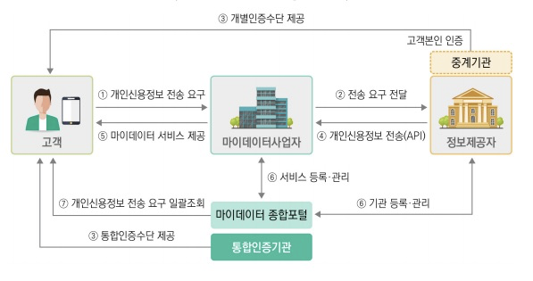
교재 p.35
교재 p.36
교재 p.37
기업 정보보호 수준 민간 자율평가. 정보보호산업법12조.
| 구분 | 내용 |
|---|---|
| 유형 | 기반(리더십,자원관리) 활동(관물기.) 선택(기업맞춤형 보안) |
| 등급 | AAA, AA, A, BB, B |
| 현황 | 2025.11 한국에너지기술평가원 최고등급 AAA 획득. |
교재 p.39
★ 빈출자율적 수행한 정보보호 수준, 투자현황 공개 제도. 정보보호산업법13조. "Shadow IT" 위험 부각
| 구분 | 내용 |
|---|---|
| 의무 | ISP, IDC, 상급종합병원, CSP / 매출액3000억↑ 100만명↑ |
| 항목 | 투인평활. 투자, 인력, 평가인증, 활동 현황 |
| 이행기한, 과태료 | 매년 6월 30일, 최대 1천만 원 |
| 현황 | "섀도우 IT" 위험 부각, 자산 식별 및 체계적 관리 중요성 대두 |
| 현황 | 2027년부터 의무대상 확대 → 코스피, 코스닥 상장사 전체 및 ISMS심사대상, 3000억 제한 삭제 |
교재 p.42
클라우드 컴퓨팅 육성/지원 환경 구축을 위한 특별법.
| 구분 | 내용 |
|---|---|
| 장 | 2. 발전기반 조성 3. 클라우드 이용촉진 4. 신뢰성 및 이용자보호 |
| 정보보호기준 고시 | 보안인증제도, 보호조치 기준(관물기), 주요조치(NW차단, 보안감사, 권한관리 자동화, 보안패치 자동화) |
| 품질성능기준 고시 | 가응확신지지고. 가용성, 응답성, 확장성, 신뢰성, 서비스지속성, 서비스지원, 고객대응 |
| +a | 제 4장 23조의 2 → 클라우스컴퓨팅서비스 보안인증 (CSAP) |
교재 p.56
★ 빈출양자 연구기반조성 및 양자산업 체계적 육성 위한.
| 구분 | 내용 |
|---|---|
| 조항 | 총추산양클. (1) 총칙(1: 목적) (2) 추진체계(5: 종합계획 5년주기, 7: 양자전략위) (3)산업기반(18: 연구센터, 24: 산학협력지구, 양자팹) (4) 양성(21: 인재양성) (5)양자클러스터 (6) 국제협력 |
교재 p.59
자필 서명과 동일 법적효력
교재 p.16
교재 p.525
산업제어시스템(ICS) 환경에서의 사이버 보안을 위한 국제 표준 시리즈
| 구분 | 내용 |
|---|---|
| 구성 | 일반, 정책및절차, 시스템, 구성요소 |
교재 p.517
국방정보 보안 요구준수 확인
| 구분 | 내용 |
|---|---|
| 수준 | Level 1 - Foundational, Level 2 - Advanced, Level 3 - Expert |
교재 p.519
차량의 기획, 생산, 폐기에 걸친 라이프사이클 전 주기 사이버보안 활동 프로세스 정의.
| 구분 | 내용 |
|---|---|
| 구성 | (기업) 조직 사이버보안, 지속적 보안활동, 위험평가 (차량생산) 프로젝트, 컨셉설계, 제품개발, 사이버보안 검증, 제품생산, 운영 (공급망) 분산형 사이버보안 활동 |
교재 p.19
OECD 회원국 간 개인정보 흐름 보장 및 정보주체 권리 보호 위한 기준.
| 구분 | 내용 |
|---|---|
| 원칙 | 수정목이안공참책. 수집제한, 정보정확성, 목적명확성, 이용제한, 안전보호, 공개, 정보주체참여, 책임 |
교재 p.412
정보보호 관리체계(ISMS) 의 구축, 구현, 유지 및 지속적 개선을 위한 요구사항을 규정한 국제표준.
| 구분 | 내용 |
|---|---|
| 특 | 리스크기반 접근, PDCA 적용, 확장성 |
| 요구사항 | 범참용 조리기지운성개. 범위, 참조, 용어정의, 조직상황, 리더십, 기획, 지원, 원영, 성과평가, 개선 |
| 2022 테마 | 조사물기. (조직적) 정보보호 정책, 역할 책임, 리스크관리 등 (사람) 교육, 훈련, 고용, 기밀유지 (물리적) 출입통제, 장비보호, 물리적 모니터링 (기술적) 암호화, 접근통제, 보안코딩 |
교재 p.409
정보보안 거버넌스를 효과적으로 수립, 유지, 모니터링 위한 국제 표준
| 구분 | 내용 |
|---|---|
| 특 | 경영 관점 접근, 성과 기반 개선, 유연한 적용 |
| 5대 원칙 | 책전획성준. 책임, 전략, 확보, 성과, 준수 |
| 6대 활동 | 평지모. 평가, 지휘, 모니터링, 소통, 정책일치, 보증 |
교재 p.53
클라우드 서비스 제공자와 이용자를 위한 정보보호 통제 지침 표준.
| 구분 | 내용 |
|---|---|
| 특 | 틀라우드 특화 보안. 책임주체 명확화. |
| 구성 | 정조인자 접암물운통 개공사비법. 정보보호 정책, 조직, 인적자원, 자산관리, 접근통제, 암호화, 물리적, 운영, 통신, 시스템개발, 공급사, 보안사고관리, BCM, 법률 |
교재 p.54
퍼블릭클라우드 환경에서 개인식별정보를 보호하기 위한 국제 표준.
| 구분 | 내용 |
|---|---|
| 특 | 퍼블릭 클라우드 중심, 규제 대응 |
| 구성 | 일동합수 데사정투 참책정규. 일반, 동의와 선택, 합법성, 수집제한, 데이터최소화, 사용제한, 정책작성, 투명성, 개인참여, 정확성, 정보보호, 보호규정 |
교재 p.16
교재 p.496
★ 빈출비신뢰 원칙 기반으로 모든 접근요청을 검증하고 최소권한으로 통제하는 보안모델
| 구분 | 내용 |
|---|---|
| 필요성 | 경계기반보안 한계, BYOD확산, 클라우드 확산 |
| 6원칙 | 기본 불신, 중앙집중통제, 강력인증, 최소권한, 세션기반접근, 지속모니터링 |
| 핵심가치 | 인증체계강화, 마이크로세그멘테이션, 소프트웨어정의경계(SDP) |
| 아키텍처 | 정책결정지점(PDP) 정책엔진(PE) 정책관리자(PA) 정책시행지점(PEP) 정책정보지점(PIP) |
| 도입절차 | 보안수준평가 → 우선순위설정 → 솔루션 도입 → 운영 → 피드백 및 개선 |
| 2.0 성숙도 | 기초향최. 기존 → 초기 → 향상 → 최적화 (자동화) |
| +a | ABAC 기반 동적 판단 : (ABAC) 주체/객체/행위/환경 속성 + (ZTA) → 동적판단(단말상태, 자원민감도, 위치, 시간, 위협정보 등 반영), 최소권한, 지속검증, 정책일관성, 감사가능성, 확장성 |
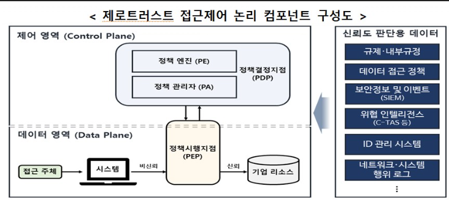
교재 p.507
제품 기획, 설계단계부터 개인정보보호를 고려하여 선제적 보호조치를 수행하는 접근방식.
| 구분 | 내용 |
|---|---|
| 법적근거 | 개보법 제3조 2항 |
| 7원칙 | 사초설균생가존. 사전예방, 초기설정, 프라이버시보호 설계, 사업기능 균형, 생애주기 보호, 처리과정 가시성, 프라이버시 존중 |
| 8전략 | 최소화, 은닉, 분리, 추상화, 통지, 통제, 집행, 입증 |
교재 p.474
금융권 디지털 전환과 보안 강화를 위해, 기존 망분리 규제를 완화한 개선안
| 구분 | 내용 |
|---|---|
| 필요성 | IT환경변화 적응, 망분리 따른 보안수준 저하 |
| 단계 | (1단계) 생성형AI활용, SaaS, 망분리개선 규제개선 → (2단계) 규제특례 정규화,확대. 정보처리 위탁제도정비 → (3단계) 자율보안,결과책임 법체계 전환 |
| 현황 | 금융보안원, '레드아이리스 인사이트 리포트' 발간. 금융권 망분리 보안 환경을 공격자 관점에서 분석. 3가지 침투 시나리오 제시하여 망분리 보안의 불충분함 강조. (침투시나리오) (1) 내부데이터 유출 (2) 업무망 침투 (3) 클라우드 경유 데이터 유출 (대응 제언) 주기적 점검, 클라우드인증정보 관리체계, 실전형 모의해킹(Red Team), 능동적 보안대응체계 |
교재 p.476
SaaS 이용가능/불가 범위 지정. SaaS 영역별 보안대책
| 구분 | 내용 |
|---|---|
| SaaS 영역 | 단말기, 연계, 관리, 운영정책) |
교재 p.479
★ 빈출업무 중요도에 따라 등급 계층 분리 및 차등적 보안통제를 적용하는 체계.
| 구분 | 내용 |
|---|---|
| 적용단계 | 준비 → C/S/O 등급분류 → 서비스 모델링 → 보안대책 수립 → 적절성 평가 및 조정 |
| 등급 | 기밀(C) 민감(S) 공개(O) |
| 모델 | 주체(Subject) 객체(Object) 모델. 낮은 등급 객체에만 접근가능 |
| 접근통제 모델 | Bell-Lapadula, Bibia 등 |
| 메커니즘 | 논리적망분리, 보안 G/W 등 |
교재 p.481
★ 빈출기관의 업무시스템을 식별, 중요도에 따른 등급 분류 및 차등적 보안통제 적용 프레임워크
| 구분 | 내용 |
|---|---|
| 망분리 개선목표 | 신기술 융합, 최적 정책개발, 안정적 정책 신속추진, 시장경제 창출 |
| 개선방향 | 보안성 유지 및 업무효율/혁신 동시달성. |
| 구성 | Classified / Sensitive / Open 등급 |
| 절차 | 준비 → 등급분류 → 위협식별 → 보안대책수립 → 적절성평가 → 보안성검토(국정원) |
| 정보서비스 모델링 | 위치, 주체, 객체 |
| 보안원칙 | 정보생산/저장(no-write-up) 정보이동(하향금지) |
| 범정부 AI서비스 보안대책 | S → O (인증, 권한, 통제) AI서비스(편향, 훈련, AI-BOM) 공통(트래픽, 식별자, 포트차단) |
| 6개 보안통제영역 | 권인분 통데정. 권한, 인증, 분리, 통제, 데이터, 정보자산 |
| 모델 | 인터넷단말, 생성형AI, 외부클라우드, R&D환경 등 |
| 현황 | 2025.9 가이드라인 1.0 발표, Draft 버전에 대한 의견수렴 및 고도화. 현장 활용성 증대. 보안의 기준점으로 활용 기대. |
| 주기동 | 주체 등급 정적평가 한계 → "N2SF 기반 AI-MCP" : AI-MCP + 생체인증 + 이상행위 탐지 통한 실시간 평가 (위험 스코어링 엔진) |
| 현황 | NIST SP 800-60 참고, 데이터 분류 가이드라인 연내 마련 → 업무별 데이터 유형 + 보안 영향도 기반 분류 → 과도한 C등급 축소, 데이터 활용성 확대 |
교재 p.486
공급과정 변조/악성코드
| 구분 | 내용 |
|---|---|
| 유형 | SW, HW, Firmware |
| 대응방안 | (SW) SBOM, DevSecOps (HW) 보안인증, TPRM, 탐지기술 (FW) 디지털서명, 보안부팅, 정식채널 |
| 공급망 보안 강화 방안 | 개발사 → 공급사 → 운영사로 이어지는 SBOM 유통체계 구축필요 |
교재 p.488
교재 p.489
★ 빈출SW공급망에 침투하여 최종 배포되는 SW가 보안에 취약한 상태로 조작되는 공격방식.
| 구분 | 내용 |
|---|---|
| 유형 | 오타공변 업내공. OSS, 타사의존성, 공용리포지터리, 변환시스템, 업데이트가로채기, 내부리포지토리, 공급사 및 협력사 |
| 대응 | 오(취약점점검, SBOM), 타(라이브러리 검증, SCA) 공(Git 보안설정강화) 변(CICD접근제어, DevSecOps), 업(서명된 패치, EDR), 내(접근모니터링, ZT), 공(TPRM) |
| 현황 | 공급망 보안 정책 동향 : (미국) EO 14028. SBOM 의무화 (EU) Cyber Resilience Act(CRA). SBOM 및 CE마크 요구 (일본) SBOM 실증 추진 |
| 현황 | EU 사이버복원력법(CRA) 시행, SW 구성요소 투명성 확보 요구. → SBOM 의무화, 능동형 방어체계, 보안 내재화 요구 → 위반 시 매출 4% 과징금 |
교재 p.16
교재 p.423
정보보호 및 개인정보보호 관리체계를 평가하고 인증을 부여하는 제도.
| 구분 | 내용 |
|---|---|
| 법적근거 | 정보통신망법 47조, 개인정보보호법 32조의 2 |
| 절차 | 인증신청 → 인증심사 → 보완조치 → 인증위원회 → 인증서발급 → 사후관리 |
| 인증체계 | 최초심사 → 사후심사(4회) → 갱신심사 |
| 의무대상 | ISP, IDC, 병원/학교(1500억), 정보통신 서비스 매출액 100억, 일일평균 이용자 100만명 |
| 인증기준 | 관리체계(16), 보호대책요구사항(64 - 정조인자 접암물운 개공사비법), 개인정보처리단계별요구(21) |
| 개선 - 의무대상 확대 | 공공시스템 운영기관, 이동통신사업자, 본인확인기관, 대규모 개인정보처리자 |
| 개선 - 인증기준 차등 | 강화인증(+20개) 표준인증(80, 101), 간편인증(44, 65) (강화인증 대상) 매출 1조 이상 ISP/IDC, 매출 3조 이사 정보통신서비스 제공자 (강화인증 기준) 최고책임자 지정, 정보자산 식별 강화, 무결성 검증, 자동화된 계정관리, 사용자 인증 강화, 인증정보 관리, 네트워크 접근 강화 |
| 개선 - 인증심사 방식 | (심사방식 강화) 심사원 확대, 취약점검요원, 점검자산 확대(10 → 최대 500) (심사절차 강화) 심사신청(관리체계 운영명세서 + 인증범위 자산현황) → 예비심사(핵심항목 선검증, 기술심사) → 본심사(코어시스템 중심 현장실사) → 사후심사(심사팀장, 결함수준별 심사인원 추가) |
| 개선 - 사후관리 강화 | (사고이력관리) 침해사고 발생이력 시 심사강화 (인증취소) 사후관리 거부, 인증기준 미달, 중대위반 → 미조치 시 인증취소 |
| 개선 - 전문성 강화 | (심사품질 개선) 품질관리 책임강화, 신뢰도 조사, 저품질 심사기관 제한 (전문성 강화) AI/Cloud 전문분야 심사체계, 전문심사원 확충 (심사기관 감독 강화) 심사기관 재지정 요건, 사후점검 강화 (심사원 역량 강화) 실무교육 강화, 심사원 인건비 현실화, 심사 가이드 제공 |
| 기업의 관리체계 수립/운영 | (수립) 범위, 정책, 조직, 자산, 위험분석 (이행) 계정관리, 접근통제, 암호화, 운영보안, 사고대응 (인증대응) 내부점검, 증적관리, 모의심사, 인증심사 대응, 사후관리 |
| AI/클라우드 환경 관리체계 | (AI) 데이터 통제, 접근통제, 보안위협 대응, AI로그관리, 정보주체 권리보장, AI거버넌스 연계(42001, RMF, AI기본법, AI영향평가) (클라우드) 자산관리, 보안형상관리(CSPM, CNAPP, IaC Scan) 접근권한관리, 데이터보호, 운영모니터링, 공급망 관리(CSP, SaaS, MSP) |
교재 p.44
클라우드 서비스 품질,성능 향상 위한 과기정통부+NIPA의 지원사업
| 구분 | 내용 |
|---|---|
| 법적근거 | 클라우드컴퓨팅법 23조 |
| 절차 | 신청 → 자가진단 → 선정 → 품질성능검증 → 확인서발급 |
| 검증기준 | 가응확신지지고. 가용성, 응답성, 확장성, 신뢰성, 서비스지속성, 서비스지원, 고객대응 |
교재 p.46
★ 빈출클라우드컴퓨팅 서비스의 정보보호 수준을 정부가 인증하는 제도.
| 구분 | 내용 |
|---|---|
| 법적근거 | 클라우드컴퓨팅법 제23조2 |
| 종류 | 최사사갱. 최초평가 → 사후평가(4회) → 갱신평가. |
| 등급 | 상중하 |
| 유형 및 통제항목 | (상/중) IaaS-116개 SaaS-79개 Daas-31개 (하) 공통-64개 SaaS-30개 |
| 항목 | 정조인자 공침연 준물가접 네암보추. 정책, 조직, 인적, 자산, 공급망, 침해사고, 연속성, 준거, 물리적, 가상화, 접근통제, 네트워크, 암호화, 시스템개발보안, 추가요구사항 |
| 절차 | 준비 → 평가 → 인증 |
| 평가단계 | 서면현장평가, 취약점점검(CCE, CVE, 시큐어코딩), 모의침투 테스트, 보완조치, 이행점검 |
| 현황 | 정부, 보안특별위원회 출범, CSAP 개편 추진 → 망분리 중심 보안에서 데이터 등급 기반(N2SF) 체계로 전환. (C/S/O) → 공공 클라우드/AI 활용 확대와 중복규제 해소 목적 |
교재 p.435
★ 빈출인증기준 경량화 및 인증기간 단축으로 중소기업의 부담을 완화한 간이 ISMS-P 인증제도
| 구분 | 내용 |
|---|---|
| 대상 | 소기업, 매출액 300억↓ 중기업, 통신설비없는 중기업 |
| 항목 | 인외 물권 접암 시운. 인적보안, 외부자보안, 물리보안, 권한관리, 접근통제, 암호화, 시스템개발보안, 운영관리 |
교재 p.446
APEC회원국 간 개인정보 이전 시 개인정보 보안을 보장하기 위한 자율인증.
| 구분 | 내용 |
|---|---|
| 특 | APEC기반, 자율인증, 상호국가인증, 공통 프라이버시 기준, 기업중심 인증 |
| 원칙 | 고수이선무 보열책피. 고지, 수집제한, 이용제한, 선택, 무결성, 보호조치, 열람/정정, 책임성, 피해구제 |
교재 p.508
개인정보를 수집하는 제품의 개인정보 처리 적법성을 평가 인증하는 제도.
| 구분 | 내용 |
|---|---|
| 필요성 | GDPR/CDPR 규제 대응, 기업경쟁력, 소비자 신뢰 |
| 대상 | IP카메라, CCTTV, 도어락, 스마트가전, 제품구동APP, 연계서비스 |
교재 p.451
★ 빈출개인정보 활용 정보시스템의 변경이 국민 개인정보에 미치는 영향 분석.
| 구분 | 내용 |
|---|---|
| 법적근거 | 피아삼삼. 개보법33조. + 시행령 35조 |
| 의무대상 | 100만명(정보주체수), 50만명(연계결과파일), 5만명(민감정보) |
| 절차 | 사전준비 → 수행 → 이행 |
| 핵심 | 개인정보 흐름분석, 침해요인분석, 영향평가서 작성 |
| 평가영역 | 1. 대상기관 개인정보보호 2. 대상시스템 개인정보보호 3. 개인정보 처리단계별 조치 4. 기술적 보호조치 5. 특정IT기술 활용시 개인정보보호 조치(영상정보처리기기, 생체인식정보, 자동화된 결정, 인공지능(학습개발, 운영관리)) |
| 현황 | 2025년 10월 인공지능 평가분야 및 항목 신설, 자동화된 결정 대응 |
교재 p.512
IT 보안 제품 및 시스템의 보안성을 평가하여 인증을 부여하는 인증제도.
| 구분 | 내용 |
|---|---|
| 기반표준 | ISO/IEC 15408 |
| 특 | 상호인증체계, EAL 등급평가, 보안요구사항 제시 |
| 용어 | PP(요구사항), ST(기능), TOE(제품), CCRA(상호인정), CEM(평가지침) |
| 파트 | 1.일반, 2.기능요구, 3.보증요구, 4.평가/활동 FW, 5.보증패키지 |
| EAL | 1~7 |
| +a | 신기술, 융복합 제품의 평가기준 부재 → 정보보호제품 신속확인제도 활용, 2년 유예 |
교재 p.516
신기술 및 융복합 정보보호제품의 평가기준이 마련될때까지 최소한의 절차와 인증기준을 적용하는 제도.
| 구분 | 내용 |
|---|---|
| 절차 | 대상검토 → 신속확인준비 → 신속확인 → 사후관리 |
| 신속확인 | 신속확인 확인서 발급, 공공부분에 제품 적용, 유효기간 2년 |
교재 p.62
| 구분 | 내용 |
|---|---|
| 주기동 | |
| 사이버공격 초기 엑세스 기술 | 보안사고에서 침해 경로 규명 불명확 → 기업용 MITRE ATT&CK 프레임워크 제시 |
| 초기 엑세스 11유형 | 콘텐츠주입, 드라이브바이 타협, 공개App이용, 외부원격 서비스, 하드웨어 추가, 피싱, 이동식미디어, 공급망손상, 신뢰관계, 유효한계정, Wi-FI네트워크 |
| 방어전략 | Defense-in-Depth, 제로트러스트, MFA, SBOM, CSPM, VM보호, Incident Report, 서드파티 리스크관리, 개발자교육 |
교재 p.66
교재 p.67
★ 빈출과도한 트래픽, 비정상 요청을 전송해 해당 시스템의 가용성을 저해하는 공격기법.
| 구분 | 내용 |
|---|---|
| 특 | 자원고갈, 비정상 트래픽 유입 |
| 절차 | 타깃 선정 → 공격방식 결정 → 요청 생성 → 트래픽 전송 → 서비스 마비 유도 |
| 유형 | (취약점 공격형) Boink, Bonk, TearDrop, Land (자원고갈 공격혁) Ping of Death, SYN Flooding, HTTP GET Flooding, HTTP CC, Smurf, Mail Bomb |
| 대응방안 | 패킷 필터링, OS패치, 불필요 포트 차단, IDS탐지 |
교재 p.73
★ 빈출다수의 분산된 공격자(좀비, 봇넷)를 통해 트래픽 발생시켜 가용성을 저해하는 공격
| 구분 | 내용 |
|---|---|
| 특 | 출처 은폐, 분산된 공격원 |
| 절차 | 악성코드 은닉 → 악성코드 감염 → 명령 대기 → DDoS 공격 수행 |
| 대응 | ACL, IP차단, SYN Proxy, DNS 다중화&전용회선, IP필터링, 지리적 차단, 이상감지, AI기반 분석, BlackHole&Sinkhole 라우팅 |
| 유형 | DRDos, Ransom DDoS, Application DDoS, Multi-Vector DDoS, IoT DDoS, Encrypted DDoS, PDoS, Slowly DDoS, Carpet Bombing DDoS |
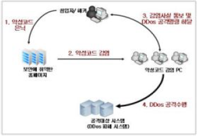
교재 p.76
★ 빈출제 3의 중계서버(정상서버) 이용해 DDoS 트래픽 전달 유도하는 기법.
| 구분 | 내용 |
|---|---|
| 특징 | 반사 및 증폭, 정상서버 이용 |
| 절차 | SYN패킷전송 → IP스푸핑 → 반사응답발생 → 과부하 유발 |
| 반사서버 | DNS, NTP, SNMP, SSDP, CHARGEN, LDAP |
| 대응 | ACL, IP차단, SYN Proxy, DNS 다중화&전용회선, IP필터링, 지리적 차단, 이상감지, AI기반 분석, BlackHole&Sinkhole 라우팅 |
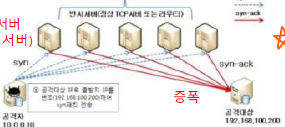
교재 p.77
네트워크 송수신 데이터를 비인가된 공격자가 수집하는 행위.
| 구분 | 내용 |
|---|---|
| 특 | 프러미스큐어스 모드(NIC 수신), 중간자 공격 |
| 유형 | 패스워드, 세션하이재킹, 이메일, FTP, DNS, VoIP, Telnet, SSH, 브로드캐스트 스니핑 |
| 대응 | 프러미스큐어스 모드 탐지, ARP모니터링, 이상트래픽분석, 인증/암호화, VPN, 패킷감시정책 |
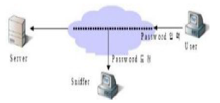
교재 p.80
로그인 상태 탈취하여 정상 사용자로 위장해 서비스에 접근하는 공격
| 구분 | 내용 |
|---|---|
| 특 | 스니핑/XSS연계, 인증 우회 |
| 절차 | 세션 수집 → 세션 재사용 → 정보접근 및 조작 → 로그인 없이 서비스이용 |
| 대응 | HTTPS적용, HttpOnly 쿠키설정, 세션ID재발급, 세션타임아웃, MFA, CSRF방지토큰 |
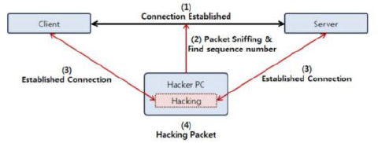
교재 p.81
★ 빈출공격자가 허위 정보를 이용해 정상 사용자 또는 정상 시스템으로 위장하는 공격기법.
| 구분 | 내용 |
|---|---|
| 특 | 2차공격 유도, 탐지 어려움 |
| 절차 | 정보수집 → 위조정보 생성 → 위장접속 시도 → 공격 실행 |
| 유형 | IP, ARP, DNS, ICMP Redirect, 이메일, 웹, MAC |
| 대응 | 정적관리, 패킷 필터링, IP위조차단, IDS, IPS, DNSSEC |
교재 p.82
위조된 ARP 메시지를 전송해 자신의 MAC 주소를 다른 IP에 대응시키는 공격
| 구분 | 내용 |
|---|---|
| 특 | ARP 캐시 변조, 중간자 공격, 신뢰기반 악용 |
| 절차 | ARP Reply 위조전송 → ARP테이블 변조 → 트래픽 유도/가로채기 |
| 대책 | 정적ARP, HTTPS, VPN |
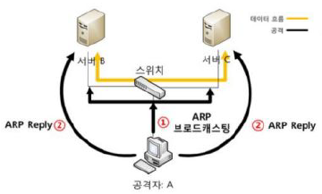
교재 p.83
출발지 IP주소를 위조하여, 실제 클라이언트처럼 패스워드 없이 서버에 접근하는 공격기법.
| 구분 | 내용 |
|---|---|
| 특 | IP변조, 탐지 회피. DRDoS연계 |
| 절차 | 타겟탐색 → IP주소위조 → 공격패킷전송 → 응답반사 |
| 대응 | Ingress/Engress 필터링, 패킷인증필드(IPSec), IDS 탐지, Bogon 필터링 |
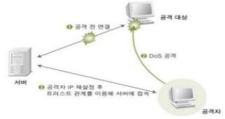
교재 p.84
ICMP Redirect 메시지를 위도하여, 피해자가 잘못된 경로로 트래픽을 보내게 만드는 공격.
| 구분 | 내용 |
|---|---|
| 특 | 라우팅 정보 조작, 패킷 납치 |
| 절차 | ICMP Redirect 위조 → 공격자 라우터 위장 → 공격자에게 트래픽 전송 → 중간자 공격 |
| 대책 | ICMP Redirect 허용금지, 정적라우팅, 라우터 보안설정, IPS,IDS 연동 |
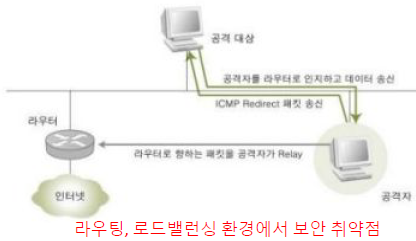
교재 p.85
실제 DNS 서버보다 빨리 공격 대상에서 DNS Response 패킷을 보내, 잘못된 IP주소로 웹 접속을 유도하는 공격
| 구분 | 내용 |
|---|---|
| 절차 | DNS 요청 → 위조된 DNS응답 전송 → 공격자 서버로 접속 → 악성 행위 수행 |
| 대응 | DNSSEC, 암호화 DNS, 보안DNS서버, 로컬 호스트 보호, IDS/IPS연동 |
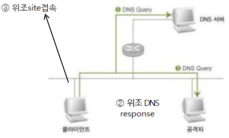
교재 p.87
공격대상의 서비스, 포트, OS, 버전, 프로세스 등 정보 수집하는 해킹 기술
| 구분 | 내용 |
|---|---|
| 유형 | Sweeps, TCP Connect Scan, TCP Half-Open Scan, Stealth Scan, UDP Scan |
| 대응 | ACL설정, IDS/IPS, 포트 차단 |
교재 p.89
블록체인 네트워크 해시파워 50%초과 장악하여 블록체인 과정을 통제, 이중지불 시도 공격
| 구분 | 내용 |
|---|---|
| 특 | 이중지불, 거래검열 및 방해 |
| 절차 | 해시파워 장악→거래이중 지불 시도→비밀체인 출현→네트워크 방해 |
| 대응 | 합의알고리즘 개선, 거래확인 수 증가, 채굴 풀 분산화 유도 |
교재 p.91
교재 p.92
| 구분 | 내용 |
|---|---|
| 대응 | 인증절차강화, 암호화, SSID 숨김, MAC필터링, 침입탐지, 불법AP탐지 |
교재 p.96
접속 시 인증절차.
| 구분 | 내용 |
|---|---|
| 특징 | RADIUS, 동적 키관리 |
| 구성 | Supplicant(단말), Authenticatior, Authentication Server, 통신프로토콜 |
교재 p.97
교재 p.99
★ 빈출네트워크 접속 사용자에 대해 인증,권한,계정관리 수행하는 프로토콜 체계.
| 구분 | 내용 |
|---|---|
| 프로토콜 | RADIUS, TACACS+, Diameter |
교재 p.98
다중 사용자 환경에서 중앙집중형 네트워크 인증을 수행하는 UDP기반의 경량 AAA프로토콜.
| 구분 | 내용 |
|---|---|
| 구성 | RADIUS Client, Server, User Database |
| 절차 | 사용자 로그인 → RADIUS 서버 전달 → USER DB 비교 → 인증결과 전달 → 접근 |
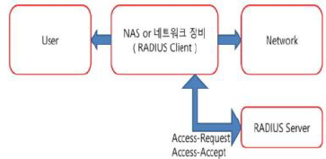
교재 p.98
TCP/SCTP 기반 확장성,보안성 강화된 RADIUS 한계 보완한 프로토콜
| 구분 | 내용 |
|---|---|
| 구성 | Client, Server, Agent, Peer |
| Agent 유형 | Relay, Proxy, Redirect, Translation |
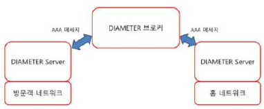
교재 p.108
| 구분 | 내용 |
|---|---|
| 표준 | WEB(RC4), WPA(TKIP), WPA2(AES-CCMP), WPA3(AES-GCMP-256) |
| 알고리즘 | RC4, TKIP, CCMP, GCMP |
| 인증방식 | PSK, SAE, EAP |
| 키관리 | PMK, PTK, GTK, 4-Way Handshake |
| 무결성 검증 | MIC, ICV, HMAC |
교재 p.104
RC4, PSK, 고정키, CRC-32
교재 p.105
TKIP, PSK+802.1x, 동적키(PMK), MIC
교재 p.106
AES-CCMP, PSK+802.1x, 동적키(PMK+PTK), CBC-MAC
교재 p.107
WPA2의 취약점을 보완하고, 최신 WiFi환경에서 개인정보보호를 강화한 차세대 무선랜 보안표준.
| 구분 | 내용 |
|---|---|
| 특 | 사전공격 차단, GCMP 적용, PMF 프레임 보호 필수, 세션노출 방어 |
| 절차 | SAE 사용자인증 → 인증결과 PMK생성 → 4-way handshake (PTK, GTK 교환) → GCMP + HMAC 무결성 검증 → PMF 암호화 |
| 구성 | SAE, AES-GCMP-256, PMK, PTK, GTK, 4-way handshake, PMF |
| 현황 | AirSnitch 공격. WPA3 암호화 데이터 탈취 공격기법 발견. → 공용 와이파이의 클라이언트 격리 기능 구현 취약점 악용. → MAC 주소 변조 및 경로 조작해 탈취(중간자공격) → 대응방안 : 클라이언트 격리 기능 구현 표준화 / HTTPS / VPN / 민감정보 송수신 최소화 |
교재 p.109
교재 p.112
★ 빈출OWASP 에서 선정한 웹 취약점 상위 10게.
| 구분 | 내용 |
|---|---|
| 구성 | 접보공암 인불인무로예. (1)취약한 접근제어 (2)잘못된 보안구성 (3) SW공급망실패 (4)암호화실패 (5)인젝션 (6)불완전한설계 (7)인증실패 (8)SW무결성실패 (9)로깅실패 (10)예외조건 잘못처리 |
교재 p.117
사용자 입력값이 신뢰되지 않은 상태로 명령문, 쿼리 등에 삽입되어 실행되는 취약점
| 구분 | 내용 |
|---|---|
| 특 | 입력 조작, 광범위 영향 |
| 유형 | SQL(에러,블라인드,매스), OS명령어, LDAP, XML, Script 인젝션 |
| 대응 | 입력검증, 최소권한, 오류숨김, |
교재 p.118
사용자 입력값이 SQL쿼리에 삽입되어 데이터베이스 명령이 조작되는 보안취약점
| 구분 | 내용 |
|---|---|
| 대응 | Prepared Statement(바인딩), 입력값 검증, 최소권한 원칙, DB오류메시지 숨김 |
교재 p.120
★ 빈출웹 어플리케이션에서 사용자 입력값 출력 시, 악성 스크립트가 실행되는 보안 취약점.
| 구분 | 내용 |
|---|---|
| 특 | 클라이언트 측 공격, 쿠키/세션 탈취, 사용자 대상 공격 |
| 절차 | 악성스크립트 작성 → 게시글, DB, URL 등 삽입 → 사용자 접근 → 스크립트 실행 → 공격 수행 |
| 유형 | Stored XSS, Reflected XSS |
| 대응 | 입력검증, 이스케이프, 스크립트 실행제한, HttpOnly/Secure 속성, 보안프레임워크, 테스트자동화(SAST, DAST) |
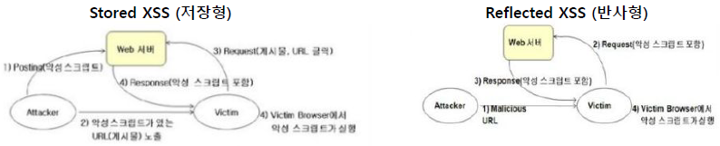
교재 p.122
★ 빈출로그인된 사용자의 권한으로 의도하지 않은 요청을 자동 전송하는 공격
| 구분 | 내용 |
|---|---|
| 특 | 인증된 사용자 대상, 정상 요청 기반 |
| 절차 | 공격자 페이지 준비 → 사용자 접속, 인증 → 악성페이지 접근 → 사용자 요청 발생 → 서버의 요청 처리 |
| 대응 | CSRF토큰, Referer&Origin 헤더검증, SameSite쿠키, 추가인증요구 |
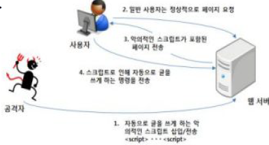
교재 p.124
★ 빈출서버 내부에서 실행되는 요청 기능을 조작하여, 내/외부 자원에 요청을 보내도록 유도하는 공격
| 구분 | 내용 |
|---|---|
| 특 | 서버가 요청주체, 내부망 접근, 보안장비우회 |
| 절차 | 조작된 요청 생성 → 방화벽 우회 → 내부 요청 실행 → 내부 서버 접근 → 정보 유출 |
| 대응 | Whitelist/Blacklist 필터링, ACL설정, 망분리, 공격징후탐지, 모니터링, 최소권한 |
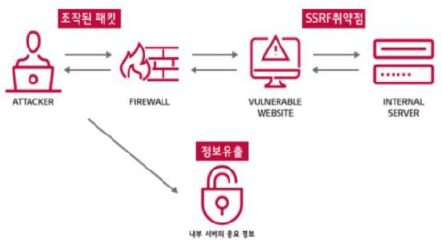
교재 p.127
애플리케이션 생명주기 전 과정에서 보안 위협 예방.
| 구분 | 내용 |
|---|---|
| 분류체계 | CVE(식별) → CPE(영향분석) → CVSS(위험도판단) → CWE(원인분석) → CAPEC(공격대응설계) |
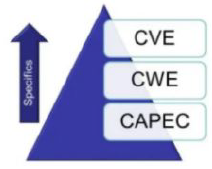
교재 p.129
★ 빈출IT시스템 개발시 소스코드 레벨에서 취약점을 사전에 제거하며 개발하는 보안기법.
| 구분 | 내용 |
|---|---|
| 대상 | 감리대상 전 사업. 상용SW제외 |
| CWE 7 Pernicious Kingdoms | 입보시에코캡A. 입력데이터검증, 보안기능, 시간/상태, 에러처리, 코드품질, 캡슐화, API악용 |
| 자동 취약점 분석 | SAST, DAST, IAST |
| 현황 | 앤스로픽, SW 취약점 탐지 에이전트AI '미토스' 공개 → 보안혁신 + 공격도구 가능성 존재 → AI보안 투자 확대, 규제 및 통제정책 필요, AI 시대 보안패러다임 전환 가속 |
교재 p.131
| 구분 | 내용 |
|---|---|
| OWASP Top 10 for OSS Risks | 알려진 취약점, 정상 패키지 침해, 유사한 패키지명, 유지관리 종료 OSS, 오래된 버전, 의존성 추적불가, 라이선스 위반, 성숙하지 않은 프로젝트, 배포된 패키지 변경, 불필요한 의존성 |
교재 p.132
소스 실행 없이 잠재 취약점을 사전에 탐지하는 정적 보안 테스트 방식.
| 구분 | 내용 |
|---|---|
| 대상 | 소스코드, 바이트코드, 바이너리 등 |
| 도구 | Snyk, SonarQube |
| 특징 | 조기발견, 높은 ROI, 자동화, 외부 연동 테스트불가 |
교재 p.133
애플리케이션을 실행하여, 외부 공격 시뮬레이션 통해 취약점을 탐지하는 동적 보안 테스트 방식.
| 구분 | 내용 |
|---|---|
| 도구 | Sparrow, OWASP ZAP |
| 특징 | 언어 독립성, 전체시스템평가, 코드 문제 탐지 한계 |
교재 p.134
내부 코드 흐름과 외부 요청/응답을 동시에 분석하는 보안 테스트 기법.
| 구분 | 내용 |
|---|---|
| 도구 | Contrast Security, Seeker |
| 특징 | 높은 정확도, 실시간탐지, DevOps친화적 |
교재 p.136
★ 빈출안전한 SW개발 위해 SDLC 상에서 보안을 강화한 개발 프로세스.
| 구분 | 내용 |
|---|---|
| 방법론 | MS SDL, Secure SW CLASP, Seven Touch Point, BSIMM, Open SAAM |
교재 p.142
신뢰 기반, 비기술적 수단으로 정보탈취.
| 구분 | 내용 |
|---|---|
| 절차 | 정보수집→관계형성→공격→실행 |
| 유형 | 인간기반(도청,비싱) 컴퓨터기반(피싱,스미싱,파밍) 물리적(베이팅,USB드롭) |
교재 p.145
신뢰할 수 있는 기관으로 위장, 이메일 등 이용해 민감정보 입력을 유도하는 사회공학기법.
| 구분 | 내용 |
|---|---|
| 특 | 사회공학, 비기술적 수단 |
| 절차 | 콘텐츠제작 → 피해자 유도 → 정보입력 유도 → 정보탈취 및 악용 |
| 유형 | 스피어피싱, 웨일링, 스미싱, 비싱, 큐싱, 파밍 |
| 대응 | 출처확인, 보안교육, URL차단, 신뢰인증, MFA, 보안솔루션, HTTPS |
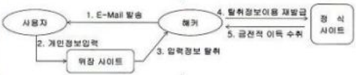
교재 p.147
QR코드를 악용하여 가짜 사이트로 유도, 개인정보를 입력하게 하는 사회공학기법.
| 구분 | 내용 |
|---|---|
| 특 | 사회심리 기반 유도, 실물+디지털 결합, 탐지 어려움 |
| 절차 | 악성 QR생성 → QR코드 유포 → 사용자 스캔 유도 → 악성 사이트 접속 → 정보탈취 |
| 대응 | 교육, MFA, KISA QR검증, 피싱방지 메커니즘, 필터링, 시뮬레이션 |
| 큐싱2.0 | 앱 설치 후 악성행위 자동실행 |
| 큐싱 2.0 | 악성 앱 설치 유도 및 자동실행, 동적 링크 등 고도화된 기술 포함됨 |
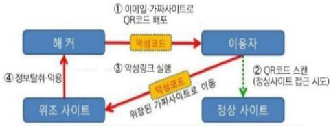
교재 p.149
악성 DNS조작 등을 통해 공격자가 만든 가짜사이트로 유도하는 사회공학 기법
| 구분 | 내용 |
|---|---|
| 특 | DNS 조작, 정상 주소 입력 |
| 절차 | 가짜 사이트 설치 → DNS 해킹 → IP조회 및 제공 → 접근 및 개인정보 노출 |
| 유형 | DNS서버 파밍, Hosts 파일 조작, 악성코드 기반 파밍, 웹 프록시 파밍 |
| 대응 | DNSSEC, Hosts보호, 악성코드차단, HTTPS, 보안교육 |
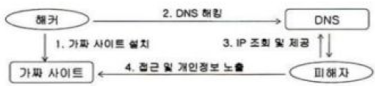
교재 p.149
악성 앱주소가 포함된 휴대폰 문자를 대량전송해 악성 앱 설치를 유도하는 기법.
| 구분 | 내용 |
|---|---|
| 절차 | 악성앱 제작/등록 → 스미싱 발송 → URL 클릭 → 악성앱 설치 → 개인정보 유출 |
| 대응 | 권한변경 금지, 결제 MFA, 악성 App 탐지 및 삭제, 공동인증서 재발급 |
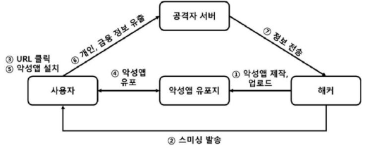
교재 p.151
정보 탈취 또는 시스템 파괴 등 악의적 목적으로 제작된 프로그램.
| 구분 | 내용 |
|---|---|
| 특 | 은밀성, 다양한 전파경로, 복합적 기능, 변종화, 보안 무력화 |
| 유형 | 웜, 바이러스, 스파이웨어, 악성봇, 루트킷, 백도어, 키로거, 애드웨어, 랜섬웨어 등 |
| 대응 | (관리) 정책, 신종정보, 보고체계, 복구체계, 교육, 공급망점검 (물리) 출입통제, PC인증, USB제어, 백업장치보호 (기술) 백신, 자동감시, 첨부검증, 자동백업, 취약점점검, 백도어점검, 솔루션 |
| 분석방법 | 행위, 구조, 의도파악. 정적, 동적, 하이브리드, 자동화 |
| 분석방해 | 폴메암난코압 Polimorphic(다형성), Metamorphic(변성), 암호화, 난독화, 코드가상화, 압축 |
| 분석방해 탐지 | 시행유평. 시그니처, 행위, 유사도, 평판 기반 |
교재 p.154
자기복제, 기생, 피해확선, 은닉성
| 구분 | 내용 |
|---|---|
| 발전 | 원시형→암호형→은폐형→다형성→매크로형 |
교재 p.156
자신 복제, 독립적 실행, 네트워크 통한 확산
| 구분 | 내용 |
|---|---|
| 유형 | MASS Mailer, 시스템공격형, 네트워크공격형 |
| 공격기법 | 포트스캐닝, 자동실행등록, 악성코드 다운로드, DoS |
| 대책 | 의심 링크/첨부제한, 방화벽 통제, 최소권한원칙, 트래픽 이상탐지 |
교재 p.157
★ 빈출폐쇄망을 USB로 뚫고 PLC코드 변조, 산업제어시스템 해킹 악성코드.
| 구분 | 내용 |
|---|---|
| 특 | 웜+루트킷+드로퍼+제로데이+PLC파괴코드 |
| 절차 | USB 감염전파 → 산업시스템 탐색 → PLC 시스템 감염 → 물리시스템 교란 |
| 대응 | (기술) USB검증, 시스템패치, 전용백신, 화이트리스트 실행제어 (관리) 보안인식교육, 보안정책, 비밀번호정책, 공급망보안, 에어갭 정책 |
교재 p.160
★ 빈출컴퓨터 파일시스템을 암호화한 후 복호화를 대가로 금전을 요구하는 악성코드.
| 구분 | 내용 |
|---|---|
| 특 | 지능적, 비표적화, 대가요구 |
| 절차 | 초기침투 → 악성코드실행 → 파일암호화 → 금전요구 → 이중협박 → 금전지급 → 후속공격 |
| 유형 | 워너크라이, 페트야, 낫페트야, 갠드크랩 |
| 대응 | 버그바운티, 백업, IDS/IPS, EDR, WAF, SEIM, Secure SDLC, 실행통제, 백신 |
교재 p.162
★ 빈출랜섬웨어 도구를 다른 범죄자에게 서비스 형태로 제공하는 사이버범죄 비즈니스모델.
| 구분 | 내용 |
|---|---|
| 특 | SaaS형 툴킷 제공, 비전문가 사용, 수익분배, 다크웹 기반 |
| 운영방식 | 구독형, 수익공유형, 혼합형 |
| 대응 | (기술) 방화벽, IDS, IPS, WAF, SIEM, Secure SDLC, 실행통제 (관리) 백업체계, 버그바운티, 대응계획, 모의훈련, 외부기기제한 |
| 사례 | 갠드크랩, Revil, BlackCat |
교재 p.163
인터넷 트래픽을 여러 중계 노드를 경유하여 익명성을 보장하는 네트워크 시스템.
| 구분 | 내용 |
|---|---|
| 특 | 익명성 보장, 다단계 암호화, 범죄 악용 |
| 구성 | Cell, Circuit, Onion Proxy, Directory서버, Onion Router, Exit Node |
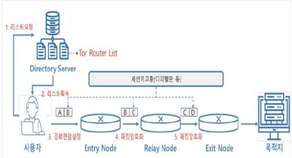
교재 p.166
★ 빈출
교재 p.167
웹서버 또는 DB를 암호화하여 서비스를 중단시킨 후 복호화 대가로 금전을 요구하는 사이버범죄
| 구분 | 내용 |
|---|---|
| 특 | APT성격, 이중협박, 웹서비스 마비 |
| 절차 | 취약점탐색, 침투 → 권한상승 및 은닉 → DB암호화 → 랜섬노트 전달 → 협박 |
| 대응 | 정기백업, 최소권한, WAF, 쿼리이상패턴탐지 |
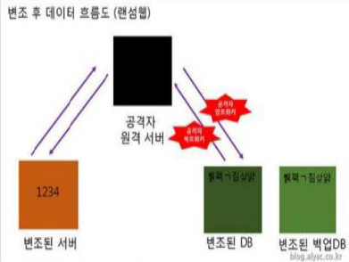
교재 p.169
공격자의 명령을 받아 자동화된 악의적 행위를 수행하는 프로그램
| 구분 | 내용 |
|---|---|
| 특 | 자동화, 은밀성, 대규모 제어, 다기능성, 자기복제 |
| 절차 | 악성코드유포 → 봇 감염 → C&C서버 접속 → 명령 수신 → 공격 실행 |
| 종류 | 미라이봇넷, Qbot, Emotet, Zbot, Necurs |
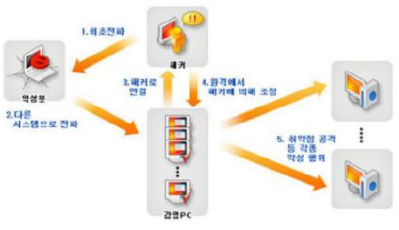
교재 p.170
★ 빈출IoT 장비를 좀비로 활용하여, 대규모 DDoS 공격을 수행하는 악성 봇넷.
| 구분 | 내용 |
|---|---|
| 특 | IoT대상, 기본계정 공격, DDoS 실행, 변종 확산 |
| 절차 | IoT Device 감염 → 전파 → 공격 명령 → DDoS실행 → 서비스장애 |
| 대응 | 기본비밀번호, IoT보안설정, NW접근제어, IPS, IDS, 통신제한 |
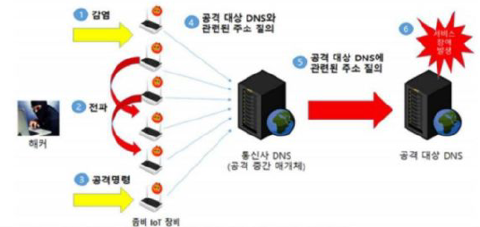
교재 p.171
★ 빈출IoT제품 개발 전 과정에 걸쳐 필요한 보안 요구사항을 제시하는 문서.
| 구분 | 내용 |
|---|---|
| 특 | IoT장치 생명주기별 보안지침, 인증제도 연계 |
| 7원칙 | (설계/개발) 프라이버시 강화 설계, 안전한 개발기술 (배포) 초기보안설정, 보안프로토콜 (운영/폐기) 취약점패치, 프라이버시 관리체계, IoT침해사고 대응체계 |
| 현황 | 민간 시장 및 산업용 영역 IoT보안 규제 사각지대 → 민간유통 IP캠 규제필요, EU의 "CE RED"규제 참고, 설계단계부터 IoT보안 중요, 국가핵심 분야부터 인증 의무화 필요 |
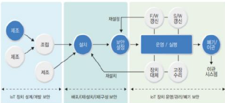
교재 p.177
★ 빈출피해 대상을 표적으로 장기간 지속적으로 정보를 수집하여 피해를 끼치는 공격기법.
| 구분 | 내용 |
|---|---|
| 특 | 지능성, 지속성, 목표지향성, 조직성 |
| 절차 | 침탐수유. 침입(사회공학, 제로데이) → 탐색(다중벡터, 탐지회피) → 수집(은닉, 권한상승) → 유출(확산, 파괴, 유출) |
| 대응 | (관리) 보안정책, 보안교육, 인텔리전스, 대응체계 (기술) EDR, XDR, DLP, 계층형방어, 권한제어 (접근관리) MFA, NAC |
교재 p.180
★ 빈출사용자 민감정보를 몰래 수집하고 유출하는 트로이목마계열 악성코드.
| 구분 | 내용 |
|---|---|
| 특 | 자동화, 2차피해, 공격방식 진화 |
| 절차 | 분석(DPAPI, OS MasterKey) → 유출(스피어피싱, 워터링홀) |
| 대응 | 악성코드탐지, 브라우저보호, 자격증명 재생성, MFA, 보안교육, 정책강화 |
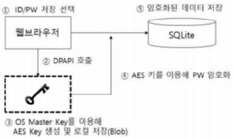
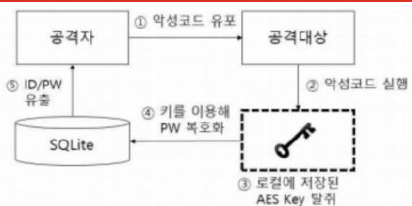
교재 p.182
★ 빈출취약점 있는 서명된 드라이버를 시스템에 설치하여 비인가된 행위를 수행하는 공격기법.
| 구분 | 내용 |
|---|---|
| 특 | 합법적 서명, 루트킷, 커널권한 획득 |
| 절차 | 시스템 접근 → 프로세스 권한상승 → 취약한 드라이버 설치 → 커널구조 수정 → 보안제어 무력화 |
| 대응 | 드라이버 IoC차단, MS서명 드라이버 사용 |
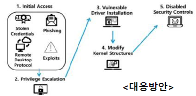
교재 p.183
★ 빈출다양한 공격수단 동시 연계 사용하여 침투 성공률을 높이는 공격기법.
| 구분 | 내용 |
|---|---|
| 특 | 다중 공격경로, 탐지회피, 광범위 피해 |
| 절차 | 탐색 → 공격실행(피싱, 악성코드, DDoS) → 은밀한 접근(백도어, RAT) → 권한유지 → 목표수행 |
| 대응 | 지능형위협차단(ATP), 예방중심보안, 중앙집중 가시성관리, 자동화된 인시던트 대응 |
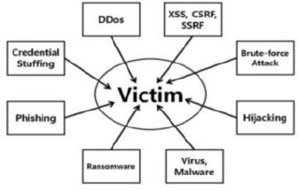
교재 p.185
★ 빈출OS나 시스템 정식 도구를 이용해 공격을 수행하는 공격기법.
| 구분 | 내용 |
|---|---|
| 특 | 탐지회피, 정상 행위 위장, 내부 침투 |
| 절차 | 초기접근 → 도구 악용 → 내부확산 → 은밀한 활동 → 흔적제거 |
| 대응 | 최소권한, 도구통제, 행위기반탐지, 로그분석, EDR, XDR, SBOM, 보안교육 |
교재 p.187
★ 빈출장기간 오픈소스 기여 통한 권한확보 후 백도어 포함 버전을 배포한 취약점.
| 구분 | 내용 |
|---|---|
| 특 | 사회공학, 정식권한 활용, 장기간 |
| 절차 | 계정생성 → 기여도 누적 → 저장소 권한획득 → 백도어 삽입 → 정식 배포 |
| 대응 | 다운그레이드, 이상동작확인, 프로세스 모니터링, 킬스위치, 시스템 격리 |
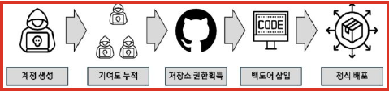
교재 p.188
정보를 인가되지 않은 사용자로부터 보호하기 위해 읽을 수 없는 형태로 변환하는 기법.
| 구분 | 내용 |
|---|---|
| 특 | 인기무부. 인증, 기밀성, 무결성, 부인방지 |
| 구성 | 평문, 암호키, 암호문, 암호알고리즘 |
| 기본알고리즘 | 치환(S-BOX, 혼돈) 전치(P-BOX, 확산) 혼합, 블록화, 확장, 압축 |
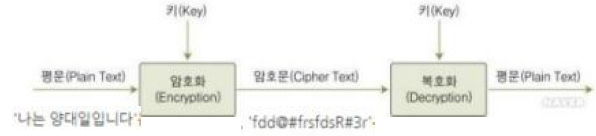
교재 p.191
★ 빈출암호문과 평문을 이용해 평문을 유추하거나 알고리즘, 키를 알아내는 공격.
| 구분 | 내용 |
|---|---|
| 공격 | 암호문단독(COA) 알려진평문(KPA) 선택평문(CPA) 선택암호문(CCA) |
| +a | 커크호프 원리에 기반해 키 보호 중요성 언급. |
교재 p.196
★ 빈출((((양방향 암호화)))) ㅡ (((대칭키 암호화))) ㅡ ((블록 암호화)) ㅡ (Feistel 구조) DES, 2-DES, 3-DEDS, SEED, Blowfish, Camellia ㄴ (SPN 구조) AES, IDEA, ARIA, PRESENT ㄴ ((스트림 암호화)) RC4, OTP, ChaCha20 ㄴ (((비대칭키 암호화))) ㅡ (소인수분해) RSA, Rabin ㄴ (이산대수) DSA, Diffie-Helman, Elgamal ㄴ (타원곡선) ECC, EDCSA ((((단방향 암호화)))) ㅡ (((Hash))) ㅡ (MDC) MD5, SHA-1, SHA-2 ㄴ (MAC) HMAC, NMAC
교재 p.197
암호화 된 데이터를 복호화할 수 있는 암호화 방식.
| 구분 | 내용 |
|---|---|
| 특 | 기밀성, 복호화 가능성, 키 기반 처리, 양방향 정보흐름, 실제 서비스 적용 용이 |
| 절차 | 키 공유 → 암호화 → 전송 → 복호화 |
| 종류 | (대칭키) AES, DES, SEED, IDEA (비대칭키) RSA, DH, ElGamal, ECC |
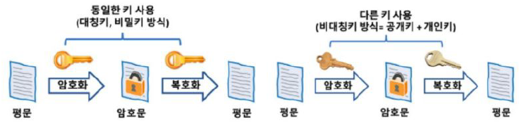
교재 p.198
★ 빈출
교재 p.199
암호화와 복호화에 동일한 키를 사용하는 암호화 방식.
| 구분 | 내용 |
|---|---|
| 특 | 단일 키, 빠른 처리속도, 키 분배 필요, 부인방지 어려움 |
| 절차 | 키 공유 → 암호화 → 전송 → 복호화 |
| 원리 | 치환, 확산, Feistel, SPN |
| 알고리즘 종류 | ((블록)) (Feistel 구조) DES, 2-DES, 3-DEDS, SEED, Blowfish, Camellia (SPN) AES, IDEA, ARIA, PRESENT ((스트림)) RC4, OTP, ChaCha20 |
교재 p.200
| 구분 | 내용 |
|---|---|
| 치환 | 암호와 키 사이의 관계 복잡하게, 키 변경시 암호문 완전 변경. S-BOX. 비선형성 |
| 확산 | 평문 비트 변경 시 암호문 전체에 골고루 영향이 퍼지도록. P-BOX. 패턴제거 |
교재 p.202
★ 빈출고정 크기 블록 단위로 나누어 각 블록마다 암호화하는 방식.
| 구분 | 내용 |
|---|---|
| 특 | 고정크기 블록 단위, 암호 운용 모드 활용, 반복 라운드 구조 |
| 암호화 구조 | (Feistel 구조) 좌우 블록 나누어 S-BOX (SPN 구조) S-BOX, P-BOX 반복수행 |
| 암호화 구조별 알고리즘 | (Feistel 구조) DES, 2-DES, 3-DEDS, SEED, Blowfish, Camellia (SPN) AES, IDEA, ARIA, PRESENT |
| 운영모드 | ECB(블록 독립, 병렬처리) CBC(첫 블록 IV+XOR → 이전 암호문 XOR) PCBC(첫 블록 IV+XOR → 이전 암호문+평문 XOR) CFB(IV 암호화 → 평문과 XOR) OFB(IV 암호화 → 키스트림+평문 XOR) CTR(카운터 값 암호화 → 키스트림과 평문 XOR) |

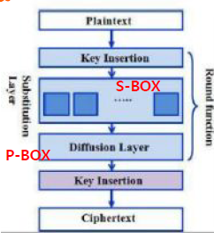
교재 p.203
입력 블록을 좌우 두 부분을 나누어 여러 라운드에 걸쳐 암호 연산을 반복하는 구조.
| 구분 | 내용 |
|---|---|
| 특 | 키 결합 연산, S-BOX 사용, XOR 연산 기반, 복호화 구조 동일 |
| 구성 | 입력 블록, 라운드 수, 라운드 키, 라운드 함수 F, S-Box, XOR 연산 |
| 절차 | 입력 블록 분할 → 오른쪽 블록+라운드키 라운드함수 입력 → S-BOX 비선형 치환 → 함수 결과를 왼쪽 블록과 XOR 연산 → 라운드 반복 |
| 알고리즘 | DES, 2-DES, 3-DEDS, SEED, Blowfish, Camellia |
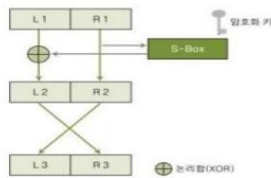
교재 p.204
NIST 개발, 64비트 블록 단위, 56비트 대칭키를 사용하는 Feistel 구조의 블록암호화 알고리즘.
| 구분 | 내용 |
|---|---|
| 구성 | 입력 블록, 라운드 수, 라운드 키, 라운드 함수 F, S-Box, XOR 연산 |
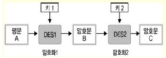
교재 p.205
대한민국 국정원 개발, 128비트블록, 128비트 대칭키를 사용하는 Feistel 구조의 블록암호화 알고리즘
| 구분 | 내용 |
|---|---|
| 구성 | 입력 블록, 라운드키, F함수, G함수, XOR 연산 |
교재 p.206
★ 빈출S-BOX(치환) P-BOX(전치) 연산을 반복적으로 적용하는 대칭키 블록암호 구조
| 구분 | 내용 |
|---|---|
| 특 | 고정 구조, 라운드 반복, 현대 암호 기반 |
| 구성 | 입력 블록, 라운드 수, S-Box, P-Box, 라운드 키, XOR 연산 |
| 절차 | 입력 평문 → 초기 키 혼합 → 치환 → 확산 → 라운드 반복 → 최종 키 혼합 → 암호문 출력 |
| 알고리즘 | AES, IDEA, ARIA, PRESENT |

교재 p.207
★ 빈출NIST가 제정한 128비트 블록, 128/192/256비트 키를 지원하는 대칭키 SPN방식 암호화 알고리즘.
| 구분 | 내용 |
|---|---|
| 특 | 고정 블록, 가변 키 길이, 높은 안전성 |
| 절차 | 아서시미. AddRoundKey → SubByutes → ShiftRows → MixColumn (복호화 시 역순) |
교재 p.209
한국 정부 개발, 128비트블록, 128/192/256키길이를 지원하는 대칭키 SPN방식 블록 암호 알고리즘
| 구분 | 내용 |
|---|---|
| 특 | 복호화 구조 동일 |
| 절차 | AddRoundKey → Substitution Layer → Diffsion Layer → AddRoundKey (복호화 순서 동일) |
교재 p.212
★ 빈출한국에서 개발된 128비트 블록 대칭키 SPN방식 암호알고리즘
| 구분 | 내용 |
|---|---|
| 특 | 고속 성능, 경량환경 최적화(IoT, 모바일). |
| 구성 | 비밀키, 키스케줄, 라운드키, 라운드, 입력, 출력 |
교재 p.213
블록 암호 알고리즘에서 블록 간 연결방식 또는 처리 흐름을 정의하는 운용 체계.
| 구분 | 내용 |
|---|---|
| 목적 | 긴 데이터처리, 보안성 향상, 응용 최적화, 처리방식 유연화 |
| 모드 | ECB(블록 독립, 병렬처리) CBC(첫 블록 IV+XOR → 이전 암호문 XOR) PCBC(첫 블록 IV+XOR → 이전 암호문+평문 XOR) CFB(IV 암호화 → 평문과 XOR) OFB(IV 암호화 → 키스트림+평문 XOR) CTR(카운터 값 암호화 → 키스트림과 평문 XOR) |
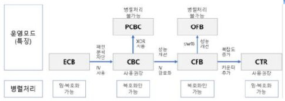
교재 p.221
평문과 같은 길이의 키 스트림을 비트 단위 XOR 연산으로 암호문 생성하는 기법.
| 구분 | 내용 |
|---|---|
| 특 | 비트 단위, 실시간 연속처리, 동기화 오류 취약 |
| 메커니즘 | 키스트림 생성 → 평문과 XOR → 암호문 출력 |
| 알고리즘 | RC4, OTP, ChaCha20 |
교재 p.222
로널드 리베스트가 개발한, 대칭키 기반의 스트림 암호화 알고리즘.
| 구분 | 내용 |
|---|---|
| 절차 | Key, IV 입력 → 키스트림 생성기 → XOR 암호화 |
| 구성 | S배열, K배열, KSA, PRGA, XOR연산기 |
교재 p.224
★ 빈출서로 다른 두 개의 키쌍을 이용하는 암호화 방식.
| 구분 | 내용 |
|---|---|
| 특 | 키 쌍, 기말성 보장, 부인방지, 키 분배 용이 |
| 알고리즘 | (인수분해 기반) RSA, Rabin, 윌리엄스 암호 (이산대수 기반) Diffie-Helman, DSA, ElGamal, KCDSA (타원곡선 기반) ECC, ECDH, ECIES, ECDSA |
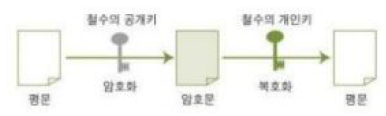
교재 p.229
큰 소수 두개의 곱에 대한 인수분해 어려움에 기반한 비대칭 키 암호화 알고리즘.
| 구분 | 내용 |
|---|---|
| 특 | 소인수분해 문제 기반, 서명 인증 가능, 키분배 용이 |
| 구성 | p, q(소수), n(모듈러스), φ(n) (오일러함수), e(공개지수), d(개인지수), 공개키, 개인키 |
| 키 생성 절차 | 소수 p, q선택 → 모듈러스 n 계산 (p x q) → 오일러함수 φ(n) → 암호화 지수 e 선택 → 복호화 지수 d 계산 |
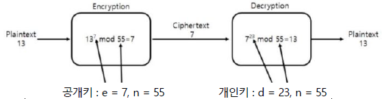
교재 p.231
교재 p.231
★ 빈출데이터 위변조 검증을 위해 사용되는 전자서명 전용 알고리즘
| 구분 | 내용 |
|---|---|
| 특 | 비대칭키, 위변조 방지, NIST 공식 표준 |
| 구성 | p, q, g, x, y, k, H(m) |
교재 p.233
★ 빈출공개 채널을 통해 비밀키를 공유하기 위한 비대칭 키 공유 알고리즘.
| 구분 | 내용 |
|---|---|
| 특 | 비밀키 직접노출 방지. 중간자 공격 취약. |
| 절차 | 공통소수 p (23), 공통 원시근 g (5) 결정 → 비밀키 a, b 생성(15, 6) → 공개키 교환( A = g^a mod p , B = g^b mod p ) → 비밀키 연산(B^a mod p = A^b mod p) |
| 단점 및 대응 | (중간자 공격) 전자서명, PKI (인증기능 부재) SSL/TLS (암호화 부재) 생성된 공유키로 AES 암호화 |
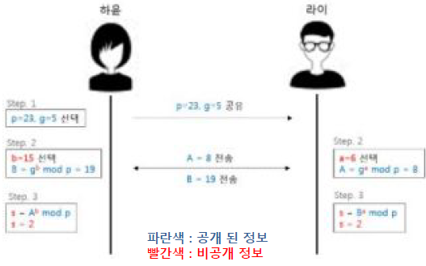
교재 p.235
★ 빈출디피 헬만 키 교환을 바탕으로 이산로그 문제의 어려움을 기반으로 한 공개키 암호화 방식.
| 구분 | 내용 |
|---|---|
| 특 | 전자서명 활용, 비대칭 키 기반 |
| 절차 | 키 생성 (y = g^x mod p) → 암호화 (C1 = g^k mod p, C2 = M * y^k mod p) → 복호화(M = C2 * (C1^x)-1 mod p) |
| 구성 | 소수 p, 원시근 g, 비밀키 x, 공개키 y, 난수 k, 평문 M, 암호문 C1/C2 |
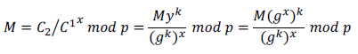
교재 p.238
★ 빈출유한체상 타원곡선 연산을 기반으로 하는 공개키 암호화 방식.
| 구분 | 내용 |
|---|---|
| 특 | 높은 보안성, 경량 암호. |
| 방정식 | Y^2 = x^3 + ax + b / Q=dG → G와 Q를 안다고 해서 d를 유추하기 어려움 |
| 구성 | 유한체 Fp, 타원곡선, 기준점 G, 비밀키 d, 공개키 Q, 메시지 점 pm, 난수 k |
| 대표 알고리즘 | ECIES(데이터 암호화) ECDSA(전자서명) 키교환(ECDH) |
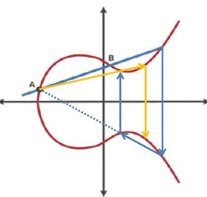
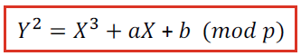
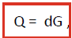
교재 p.244
★ 빈출
교재 p.245
임의 길이 입력을 고정된 길이의 해시 값으로 변환하는 단방향 변환 함수.
| 구분 | 내용 |
|---|---|
| 특 | 복호화 불가, 고정 길이 출력 |
| 해시 특성 | 압효저. 압축성, 효율성, 저항성(역상, 제2역상, 충돌저항) |
| 유형 | (MDC) MD5, SHA-2, SHA-3, HAVAL, Tiger, LSH (MAC) NMAC, HMAC, CMAC, KMAC |
| 안정성 강화 | 솔팅, 키 스트레칭, 느린 해시 함수, 페퍼링, 복합 적용 |
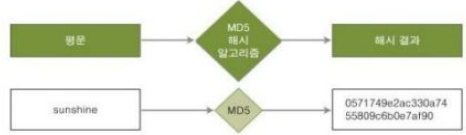
교재 p.246
입력 데이터 무결성 검증 위해 해시함수 이용해 생성하는 코드.
| 구분 | 내용 |
|---|---|
| 특 | 누구나 계산 가능, 무결성 검증 |
교재 p.248
NIST가 개발한, 입력 데이터를 고정 길이 해시값으로 변환하는 MDC방식의 해시 함수
| 구분 | 내용 |
|---|---|
| 특 | 단방향성, 압축성, 무결성 검증, 입력 민감성 |
| 구성 | f함수(논리연산), W값(확장비트), K상수(라운드별 고정상수) |
| 절차 | 메시지 패딩 → 메시지 블록 분할 → 메시지 스케줄 생성 → 초기 해시 설정 → 80라운드 반복 → 해시 누적 처리 → 최종 해시 출력 |
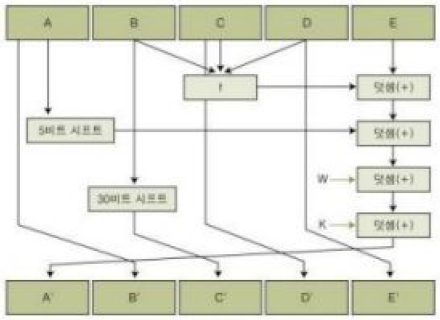
교재 p.250
★ 빈출SHA-2 계열의 대안으로 개발된 한국의 고속, 고안전성 해시 함수
| 구분 | 내용 |
|---|---|
| 특 | 국산, 병렬처리(SIMD), 고속 연산(512/1024입력) |
| 절차 | 메시지 패딩 → 메시지 블록 분할 → IV설정 → 메시지 스케줄링 → 압축 → 최종 상태값 저장 → 해시값 추출 |
교재 p.251
메시지 무결성 및 송신자 인증을 위해 메시지와 비밀키를 함께 사용해 생성하는 코드
| 구분 | 내용 |
|---|---|
| 특 | 무결성+인증, 키를 아는 사용자만 생성가능 |
| 절차 | 비밀키 공유 → 메시지와 비밀키 입력 → MAC 생성 → MAC+메시지 전송 → 수신자측 MAC 재계산 → MAC비교 |
| 종류 | NMAC, HMAC, CMAC, KMAC |
교재 p.253
★ 빈출해시 함수를 이용하여 비밀키와 메시지를 섞어 MAC을 생성하는 방식.
| 구분 | 내용 |
|---|---|
| 특 | 비밀키 기반, 중첩 구조(외부/내부 해시) |
| 구성 | 메시지, 비밀키, 해시함수, ipad, opad, 내부해시, 최종HMAC결과 |
| 절차 | (송신) 메시지 준비 → 비밀키 사용 → HMAC 알고리즘 수행 → MAC 생성 → 메시지+MAC 전송 (수신) 메시지 수신 → 비밀키 K사용 → HMAC 재계산 → MAC 비교 → 일치 판단 |
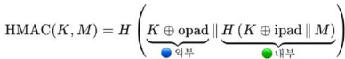
교재 p.261
양자역학의 원리를 확용해 정보를 처리하는 컴퓨터
| 구분 | 내용 |
|---|---|
| 특 | 큐비트, 중첩, 얽힘, 양자간섭 |
| 용어 | 이중슬릿, 결맺음, 결잃음, 관측, 양자간섭, 터널링 |
| 기술요소 | (하드웨어) 큐비트, 양자칩, 양자게이트, 양자레지스터 (소프트웨어) 양자 알고리즘, 프로그래밍언어, 오류정정코드, 컴파일러, 시뮬레이터 |
| 유형 | 게이트기반, 양자어닐링, 측정기반, 위상 |
| 큐비트 생성기법 | 초전도, 이온트랩, 광자, 반도체, 다이아몬드 |
| 알고리즘 | 쇼어, 그로버, 레게브 |
| 현황 | 오류/디코히런스 해결방안 : 양자 오류정정(QEC), 동적 디커플링, 양자 결함 내성(Fault-Tolerant Quantum Computing, FTQC) |
| 주기동 | 본질적 취약점 - 결맺음 깨짐(Decoherence) : 노이즈로 인해 고유 특성 파괴 → 양자 오류 정정(QEC) : 쇼어9큐빗부호, 스테인7큐빗부호, 표면부호, 양자 저밀도 패리티 검사 |
| 주기동 | (해결) 내결함성 양자 컴퓨팅(FTQC) : 물리적 오류가 논리적 수준에서 치명적 오류로 증폭됨을 방지, 신뢰성 있는 계산 수행. |
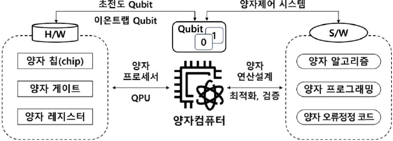
교재 p.256
★ 빈출암호화 상태에서도 연산 및 분석이 가능한 4세대 암호화 기법.
| 구분 | 내용 |
|---|---|
| 특 | 프라이버시 보존, 데이터 이동 최소화, 높은 계산비용 |
| 유형 | 부준완. 부분 준 완전 |
| 기술 | Gen09, DGHV10, CRT-Based |
| 알고리즘 | Pailer(공개키, 덧셈), RSA(곱셈), BGV(정수, 완전동형), CKKS(실수), TFHE(이진연산) |
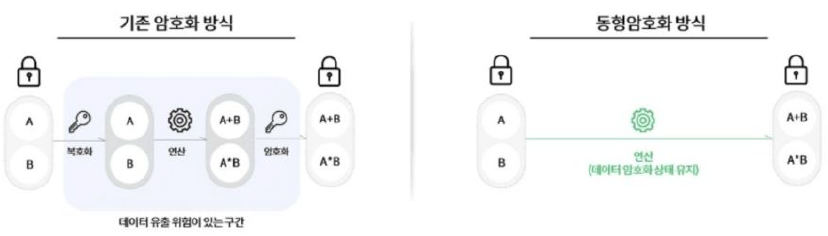
교재 p.265
★ 빈출Shor, Grover 알고리즘이 효율적으로 해결할 수 없는 수학적 난제를 이용해 설계된 암호기술.
| 구분 | 내용 |
|---|---|
| 특 | 공개키 대체, 장기 보안 확보 |
| 유형 | 다코격아해. 다변수(Rainbow, Gui), 코드(QC-MCPC, Wild McEliece), 격자(Dilithium, Kyber), 아이소제니(SIDH), 해시(SPHINCS+, XMSS) |
| 현황 | 양자내성암호 적용 따른 CPU(HSM, TPM) 연산 부담 급증 → NPU가 AI연산 오프로드 CPU 가 PQC연산에 집중(직접연산X) → NPU 부하분산 & NTT(수론변환) 최적화 필요 |
교재 p.267
★ 빈출양자역학의 원리를 이용하여 정보를 전송하는 차세대 정보통신 기술.
| 구분 | 내용 |
|---|---|
| 특 | 절대보안성(도청 시 탐지), 양자키분배 |
| 기술 | (광원) 양자광원, 검출기 (QKD) Optical-fiber QKD, Free-Space QKD (QKD 프로토콜) BB84, COW04 (난수생성) 의사난수, 양자난수생성기(QRNG) (시스템) 양자중계기, 송수신기 |
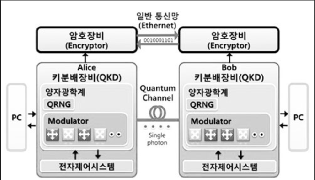
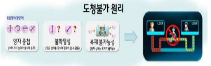
교재 p.268
★ 빈출양자역학의 원리를 이용해 두 사용자 간에 안전한 암호키를 공유하는 기술.
| 구분 | 내용 |
|---|---|
| 특 | 도청 시 양자상태가 변경, 탐지가능. |
| 프로토콜 | BB84(양방향, 양자채널+고전채널, 편광) COW04(단방향, 레이저펄스 간격, 신호펄스+기준펄스) |
교재 p.271
공개키 암호화 기반으로 안전한 인증 및 암호화를 위한 인증 체계.
| 구분 | 내용 |
|---|---|
| 특 | 부인봉쇄, 인증, 무결성, 기밀성 |
| 기관 | PAA, PCA, CA, RA |
| x509 v3 인증서구조 | 버일서발유주공 식식주C기키인손손. (기본영역) 버전, 일련번호, 서명알고리즘, 발급자, 유효기간, 주체, 공개키 (확장영역) 기관 키식별자, 주체 키식별자, 주체 대체이름, CRL 배포지점, 기관정보엑세스, 키 사용용도, 인증서정책, 손도장 알고리즘, 손도장 |
| 인증서 검증 메커니즘 | CRL(주기적 목록 제공), OCSP(실시간 상태확인), SCVP(인증서 유효성 + 체인 검증) |
교재 p.276
★ 빈출전자문서 무결성 검증 위해 공개키 암호 기반으로 생성된 디지털 서명.
| 구분 | 내용 |
|---|---|
| 특 | 위조불가, 부인방지, 서명자 인증, 변경 불가, 재사용 불가, 분쟁해결 |
| 알고리즘 | (기본) RSA (경량) ECDSA, KCDSA (양자 대응) Dilithuim, SPHINCS+ |
| 절차 | (송신) 원문 해시 생성 ▶ 암호화(송신자 개인키, 해시)=전자서명 ▶ 원문+전자서명 전송 (수신) 원문 해시 생성 ▶ 복호화(송신자 공개키, 전자서명)=해시 ▶ 해시값 간 비교 |
교재 p.280
★ 빈출데이터를 대칭키로 암호화하고, 대칭키를 수신자 공개키로 암호화해 안전하게 전달하는 기법.
| 구분 | 내용 |
|---|---|
| 특 | 대칭+공개키 결합, 키 공유 필요, 전자서명 병행 가능 |
| 절차 | (송신) 암호화(대칭키, 원문) = 암호문 ▶ 암호화(수신자 공개키, 대칭키) = 키 암호문 ▶ 암호문 + 키 암호문 전달 (수신) 복호화(수신자 개인키, 키 암호문) = 대칭키 ▶ 복호화(대칭키, 암호문) = 원문 |
교재 p.282
온라인 신용카드 거래 안전성 확보 위해 개발된 전자결제 보안 프로토콜.
| 구분 | 내용 |
|---|---|
| 특 | 이중서명 사용, 공개키 기반 |
| 기술 | PKI, 디지털 인증서, 전자서명, 이중서명, 전자봉투, 메시지 무결성 검증 |
교재 p.284
연결은 유지하며 내용분리. 각 수신자만 열람 하도록 하는 전자서명 방식
| 구분 | 내용 |
|---|---|
| 구분 | OI구매정보 PI결제정보 |
| 절차 | 각각 해시 → 해시 결합해 다시 해시 → 사용자 개인키로 암호화 |
교재 p.286
메일 본문, 첨부파일 암호화
| 구분 | 내용 |
|---|---|
| 기술 | PGP(WoT기반, 전자서명), S/MIME(전자서명+암호화), PEM(초기 방식) |
교재 p.289
네트워크 전송 과정에서 도청, 위변조 및 보안 공격으로부터 보호하기 위한 암호화 기술.
| 구분 | 내용 |
|---|---|
| 특 | 기밀성, 무결성, 종단 간 보호, 계층별 적용 |
| 보안기술 | (7계층) HTTPS, S/MIME, PGP (4계층) TLS/SSL (3계층) IPSec, VPN, MobileIP (2계층) MACSec (무선) WPA2, WPA3, EAP |
교재 p.290
★ 빈출네트워크 3계층에서 IP패킷을 암호화하고 인증 보안을 제공하는 프로토콜 집합.
| 구분 | 내용 |
|---|---|
| 특 | 투명성, 종단 간 및 터널링 지원, VPN 구현가능 |
| 구성 | (인증) SA, AH, ESP, IKE (정책) SAD, SPD |
| 운영모드 | 전송모드(AH/ESP 삽입), 터널모드(새로운 IP헤더와 AH/ESP헤더 캡슐) |
| 키교환 절차 | IKE_SA_INIT (DH 교환) → IKE_SA_INIT Response (생성완료) → IKE_AUTH (SA제안) → IKE_AUTH Response (IKE SA + IPSec SA) |
교재 p.293
클라이언트와 서버 간 보안 통신을 제공하기 위한 인증, 암호화 프로토콜.
| 구분 | 내용 |
|---|---|
| 특 | 공삼암핸. 공개키, 3개 인증모드, 암호알고리즘, 핸드쉐이크. |
| 인증모드 | 서버인증, 클라이언트인증, 암호화세션 |
| 핸드쉐이크 절차 | ClientHello → ServerHello → ServerKeyExchange → ServerHelloDone → ClientKeyExchange → ChangeCipherSpec → Finished |
| 인증서 종류 | (인증수준별) Domain Validation(DV), Organization Validation(OV), Extended Validation(EV) (도메인 범위별) Single Domain, WildCard, Multi-Domain(SAN) |
| +a | TLS1.2 문제점 → 세션 재협상, 디지털서명 취약, 중간자공격 → TLS 1.3 개선 → 1 RTT, AEAD방식, ECDHE필수, 세션 재협상 제거 |
교재 p.301
★ 빈출DNS 응답에 디지털 서명을 추가하여, 응답이 변조되지 않았음을 검증할 수 있도록 확장한 기술.
| 구분 | 내용 |
|---|---|
| 특 | 무결성 보장, 출처 인증, 공개키 구조, 신뢰 체인 구조 |
| 구성 | ZSK, KSK, RRSIG, DNSKEY, DS |
| 검증 단계 | (클라)도메인 요청 → (리졸버) DNS서버 질의 → (서버) IP + RRSIG 응답 → (리졸버) 해시 생성 → (클라) DNSKEY 요청 → (클라) RRSIG 해시 검증 → (클라) 상위도메인 체인 검증 |
교재 p.408
조직 보안 목표와 전략을 정의하고 조직 전체에 일관성 있게 적용하는 관리체계
| 구분 | 내용 |
|---|---|
| 특 | 경영진 주도, 리스크기반 접근, 정책 중심, 지속적 개선, 역할/책임 명확화 |
| 원칙 | 전가위자성. 전략적연계, 가치전달, 위험관리, 자원관리, 성과관리 |
교재 p.453
정보보호 활동을 전담하거나 관리,조정하기 위해 구성된 조직적 체계.
| 구분 | 내용 |
|---|---|
| 구성 | CSO, CPO, 정보보안관리자, 정보보안담당자, 팀별 정보보안담당자 |
교재 p.455
조직 내 개인정보 보호 수준을 체계적으로 관리 감독하는 책임자
| 구분 | 내용 |
|---|---|
| 법적근거 | 개인정보보호법 제31조 |
| 의무지정 | 매출 1500억↑(민감정보 5만개, 100만 이상 개인정보), 재학생 2만↑학교, 상급종합병원, 공공시스템 운영기관 |
| 업무 | 계획수립, 정기조사, 피해구제, 통제시스템구축, 교육 |
교재 p.454
조직 내 정보보호 및 보안 전반을 총괄하는 임원 급 책임자.
| 구분 | 내용 |
|---|---|
| 법적근거 | 정보통신망법 제45조3. |
| 업무 | 정책수립, 감사, 사고대응, 보안대책운영 |
| 현황 | 2026.03 정보통신망법 개정안 통과, 주요 사업자의 CISO 지정 및 보안 인력/예산 확보 의무 강화됨. |
교재 p.62
비인가 사용자에 대한 시스템 이용을 제한하는 운영체제 중심적 보안 조치.
| 구분 | 내용 |
|---|---|
| 기능 | 계세접권로취. 계정/패스워드관리, 세션관리, 접근제어, 권한관리, 로그관리, 취약점관리 |
| 패스워드관리 | 지소생특. 지식, 소유, 생체, 특징 기반 |
교재 p.385
교재 p.385
외부 제공업체의 보안 기능을 클라우드 서비스(SaaS) 형태로 이용하는 모델.
| 구분 | 내용 |
|---|---|
| 특 | 클라우드기반, 구독형, 빠른 배포 |
| 기능 | 신원&접근, DLP, 웹보안, 이메일보안, 보안점검, 침입관리, SEIM, 암호화, 재해복구, 네트워크보안 |
교재 p.386
기업과 클라우드 서비스 중간에서 보안정책 및 규제준수를 보장하는 중개시스템.
| 구분 | 내용 |
|---|---|
| 특 | 클라우드 접근통제, 정책기반보안, Shadow IT 탐지 |
| 기능 | 접근통제, DLP, 이상탐지, 로깅및 감사, 가시성(모니터링), 컴플라이언스 |
| 유형 | 에이전트형, 프라이빗형, 퍼블릭형, API형 |
교재 p.388
클라우드 환경 설정, 보안정책, 취약점 등을 자동으로 분석 관리하는 보안 솔루션.
| 구분 | 내용 |
|---|---|
| 특 | 설정기반 보안점검(IAM), 자동 수정 지원, 멀티클라우드 지원 |
| 기능 | 컴플라이언스 모니터링, DevOps통합, 설정모니터링, 자산인벤토리관리, 위험도평가, 사고대응 |
교재 p.389
클라우드 환경 워크로드에 대해 위협 탐지 및 보안 기능을 제공하는 보안플랫폼.
| 구분 | 내용 |
|---|---|
| 특 | DevSecOps 통합, 워크로드 실행단위별 대응 |
| 가트너 CWPP 우선순위모델 | Option, Core, Important, Foundational |
| 구성 | 워크로드 에이전트, 취약점 분석기, 런타임 보호모듈, 정책제어/적용엔진, 무결성 검사기, 관리자 콘솔 |
교재 p.391
★ 빈출네트워크와 보안 기능을 클라우드에서 통합 제공하는 아키텍처 모델.
| 구분 | 내용 |
|---|---|
| 특 | 위치 무관, 엣지 적용, 제로트러스트 기반, 멀티환경 유연성 |
| 구성 | (Network Security as a Service) CASB, SWG, FWaaS, ZTNA, VPN (Network as a Service) SD-WAN, CDN |
교재 p.392
SASE에서 보안 기능만 분리하여, 클라우드 보안을 제공하는 아키텍처.
| 구분 | 내용 |
|---|---|
| 특 | SaaS 보호 특화, POP 기반 클라우드보안 |
| 구성 | ZTNA, CASB, SWG, DLP |
교재 p.394
★ 빈출클라우드 네이티브 애플리케이션의 전체 수명주기에서 보안을 통합 관리하는 플랫폼.
| 구분 | 내용 |
|---|---|
| 특 | 전체 수명주기 커버, 통합플랫폼, 실시간 위험탐지, 자동화중심 |
| 구성 | CSPM, CWPP, CEIM, Container&Serverless 보안, IaC보안, SBOM |
| 수명주기별 보안 | (개발) 코드보안, 이미지스캐닝, IaC분석 → (배포) CSPM, CIEM → (실행) CWPP, 런타임 위협탐지, 이상행위분석 |
교재 p.362
★ 빈출운영체제 커널 수준에서 모든 요청을 정책 기준으로 평가하여 통제하는 보안강화 운영체제.
| 구분 | 내용 |
|---|---|
| 특 | 강제 접근제어, 최소권한, 무결성 보호, 감사 기능 |
| 구성 | 보안커널, 정책관리자, 무결성보호모듈, 감사 로그모듈, 보안콘솔 |
교재 p.522
고립된 네트워크 환경에서 제조사 자체적으로 개발한 운영체제로 운영되는 설비 제어 시스템.
| 구분 | 내용 |
|---|---|
| 유형 | SCADA(모니터링) DCS(제어) PLC(제어) |
| 취약점 | 보안설계, 에어갭, 공격표면, 노후화, 패치미흡, 공급망, 권한관리 |
| 대응 | 위험평가, 자산 가시성, 보안솔루션, 네트워크보안, 모니터링, 제3자 보안통제 |
교재 p.526
사회 필수서비스 운영 위협 사이버활동에 대한 보호 위한 원칙
| 구분 | 내용 |
|---|---|
| 원칙 | 안전최우선, 비즈니스 지식 중요, OT데이터 보호, OT인프라 격리, 공급망 안전, 사람 필수 |
| 현황 | KISA, 국내 OT 환경 제로트러스트 적용 안내서 발표 → 실시간성 유지, OT독립성, 전역 침해 가정, 지속모니터링 |
교재 p.528
★ 빈출ISA-99 에서 제정한 PERA기반, IDMZ를 사용한 IT와 OT의 이중 분리구조의 보안참조 모델
| 구분 | 내용 |
|---|---|
| 계층 | (Level 5) 애플리케이션 (Level 4) 비즈니스 (IDMZ) 보안솔루션 연계 (Level 3) 생산운영, 공정 (Level 2) 현장 단위 제어 (Level 1) 기본 제어/제조 (Level 0) 프로세스 장비 |
교재 p.339
교재 p.339
★ 빈출내부 및 외부 네트워크 간 트래픽을 제어하여, 정책 기반으로 공격을 차단하는 시스템.
| 구분 | 내용 |
|---|---|
| 특 | 정책기반 필터링, 로그 모니터링 |
| 기능 | 접사감프주. 접근제어, 사용자인증, 감사, 프록시, 주소변환(NAT) |
| 위치측면 유형 | 스베듀스스. 스크리닝라우터, 베스쳔, 듀얼홈드GW, 스크린드 호스트GW, 스크린드 서브넷 GW |
| 기능측면 유형 | 패킷필터링, 상태기반, 프록시, 차세대 방화벽(NGFW), WAF, 호스트기반 |
교재 p.344
기존 방화벽 기능에 더해 애플리케이션 수준의 보안 제어를 제공하는 고급 보안 장비.
| 구분 | 내용 |
|---|---|
| 기능 | L7제어. 정책제어. SSL세션해독, URL필터, UTM기능 |
교재 p.345
웹 어플리케이션을 대상으로 하는 공격을 탐지, 차단하는 HTTP/HTTPS 전용 방화벽.
| 구분 | 내용 |
|---|---|
| 기능 | 웹공격대응, 정책기반 필터링, 트래픽분석, SSL 복호화, 실시간경보, OWASP Top10 대응, API보호, 우회공격대응 |
교재 p.347
★ 빈출외부의 보안 위협 및 침입행위를 실시간으로 탐지하는 시스템.
| 구분 | 내용 |
|---|---|
| 특 | 수동감시, 실시간탐지, 행위기반분석 |
| 구성 | 정보수집기, 정보분석기, 이벤트보고, 패턴DB |
| 유형 | (위치] NIDS, HIDS, Hybird IDS (탐지방식) 시그니처기반IDS, 행위기반IDS |
교재 p.348
★ 빈출보안 위협 행위를 실시간으로 탐지하고 자동으로 차단하는 능동형 보안시스템.
| 구분 | 내용 |
|---|---|
| 특 | 실시간 차단, 능동 시스템, 세션기반 탐지 |
| 구성 | 패킷캡처, 정책제어, 시그니처DB, 로깅 |
| 유형 | (위치) NIPS, HIPS (탐지방식) 시그니처기반IPS, 행위기반IPS |
교재 p.349
무선네트워크에 대한 침입을 탐지하고 차단하는 보안시스템.
| 구분 | 내용 |
|---|---|
| 특 | 불법 AP탐지, 스푸핑 방어, 위치 추적, 정책기반 감시 |
| 구성 | 무선센서, 분석모듈, 정책서버, 차단모듈, 관리콘솔 |
교재 p.350
★ 빈출터널링 기법을 사용하여 공중망에서 전용회선을 구성한 효과를 내는 가상네트워크.
| 구분 | 내용 |
|---|---|
| 특 | 도청방지, 공용망 사설화, 원격접속지원, 접속위치은폐, 유연한 구성 |
| 프로토콜 | L2TP, PPTP, L2F, MPLS, IPSec, SSL/TLS |
| 구현기술 | (터널링) L2TP, PPTP, GRE (암호화) AES, ChaCha20 (인증) OTP, 인증서, 토큰 (키관리) IKE, Diffie-Helman |
| 구성방식 | 1:1, Hub&Spoke, Full Mesh, PartialMesh, Overlay VPN, Peer2Peer |
| 구성 유형 | Lan to Lan (네트워크 상호연결) Lan to Client (조직 내부망 접속) |
교재 p.354
패킷 라벨 부여, 2계층 고속 스위칭
| 구분 | 내용 |
|---|---|
| NW장비 | LER, LSR, LSP |
| 프로토콜 | LDP, FEC, LABEL |
교재 p.355
통신사업자의 MPLS 전용망을 통해 구성되는 고성능 네트워크 VPN
| 구분 | 내용 |
|---|---|
| 특 | 고속전송, QoS, 논리적분리(VRF) |
| 구성 | CE, PE, P, VRF, LSP, LDP |
| 기술 | MPLS, LDP, MP-GBP, RSVP-TE, QoS |
교재 p.356
웹 브라우저와 SSL/TLS 프로토콜을 이용해 안전한 원격 접속을 제공하는 VPN
| 구분 | 내용 |
|---|---|
| 특 | 웹 기반 접속, HTTPS 암호화 |
| 구성 | SSLVPN G/W, 인증시스템, 정책서버, 웹포털UI, 내부리소스, PKI, SSL/TLS 프로토콜 |
교재 p.358
네트워크 접속 단말의 보안 상태를 검사하고 정책에 따라 접근을 제어하는 시스템.
| 구분 | 내용 |
|---|---|
| 특 | 단말 상태 평가, 인증 연동, 자동 격리 |
| 구성 | 인증서버, 정책서버, NAC에이전트, 검역망, 관리콘솔 |
| 절차 | 사용자 단말 → 인증시스템 → NAC 정책서버 → 네트워크 접근제어장비 → 내부네트워크/검역망 |
교재 p.359
칩입 및 유출방지를 위해 네트워크 공간을 분리한 환경.
| 구분 | 내용 |
|---|---|
| 법적근거 | 정보통신망법 시행령 15조2 |
| 유형 | 물리적(2PC, 스위치) 논리적(가상화 SBC CBC) |
| 망연계 기술 | 소켓방식, 스토리지방식, 시리얼방식 |
| 현황 | 금융보안원, '레드아이리스 인사이트 리포트' 발간. 금융권 망분리 보안 환경을 공격자 관점에서 분석. 3가지 침투 시나리오 제시하여 망분리 보안의 불충분함 강조. (침투시나리오) (1) 내부데이터 유출 (2) 업무망 침투 (3) 클라우드 경유 데이터 유출 (대응 제언) 주기적 점검, 클라우드인증정보 관리체계, 실전형 모의해킹(Red Team), 능동적 보안대응체계 |
교재 p.371
시스템 및 인프라에서 발생하는 보안 이벤트를 24시간 실시간 모니터링하는 보안 활동.
| 구분 | 내용 |
|---|---|
| 특 | 항시운영, 다계층 분석, 이상행위 탐지, 조기 대응, SIEM 중심 |
| 원칙 | 무중단, 전문성, 정보공유 |
| 유형 | 원격, 파견, 자체, 클라우드 |
| 업무절차 | 예방 → 탐지 → 대응 → 보고 → 공유 및 개선 |
| 유형 | 원격관제, 파견관제, 자체관제, 클라우드관제 |
| 진화과정 | ESM → SEIM → SOC → 샌드박스 → UEBA → SOAR → XDR |
교재 p.375
다양한 보안 장비의 로그 및 이벤트를 수집하고 보안 관제를 수행하는 시스템
| 구분 | 내용 |
|---|---|
| 특 | 모니터링 중심, 이벤트 통합, 수동 대응, 상관분석 |
| 구성 | Agent, Manager, Console |
교재 p.376
★ 빈출실시간으로 보안 이벤트를 수집, 분석, 상관 연계하여 보안 위협을 탐지하는 시스템.
| 구분 | 내용 |
|---|---|
| 특 | 로그 통합 수집, 실시간 상관분석, 리포트 자동화 |
| 구성 | 로그수집기, 로그저장소, 상관분석엔진, 경고모듈, 관제콘솔 |
| 제품 | Splunk Enterprise Security, Azure Sentinel |
| 주기동 | (한계점) 필터링 지연, 확장성 부족, 정확성 저하 → 위협 탐지 사각지대 → (해결기술) 보안 데이터레이크, SaaS기반 분산분석, 실시간 스트리밍 처리 |
| 주기동 | 제로트러스트 보안 모델과 SIEM 연계 방안 : 정책정보지점(PIP)에서 SIEM이 보안 이벤트 중앙 통합, 상관분석 수행 |
교재 p.378
★ 빈출사용자 및 시스템의 행위 패턴을 분석하여 이상행위를 탐지하는 보안분석 기술.
| 구분 | 내용 |
|---|---|
| 특 | 머신러닝 분석, 내부자 위협 대응, SIEM 연계 |
| 기술 | 머신러닝, 통계모델, 이상치탐지, 리스크 스코어링, 행위흐름 시각화, 비지도학습, 행동군집화 알고리즘 |
교재 p.368
★ 빈출단말에서 발생하는 이상행위를 탐지하고 대응하는 지능형 보안 솔루션.
| 구분 | 내용 |
|---|---|
| 특 | 행위탐지, 단말 격리, 파일/프로세스 추적 |
| 기능(가트너) | 예탐방대. 예측, 탐지, 방어, 대응 |
교재 p.379
보안 운영과 분석을 하나의 통합 아키텍처로 구성하는 차세대 보안 프레임워크
| 구분 | 내용 |
|---|---|
| 특 | 도구 간 통합, 데이터중심 분석, 자동화된 대응, 플랫폼 유연성 |
| 기능 | SEIM + SOAR + Treat Intelligence + EDR + NDR |
| 4계층 | 분산데이터서비스, SW서비스통합계층, 분석계층, 보안운영플랫폼계층 |
교재 p.380
★ 빈출보안 시스템과 프로세스, 운영을 유기적으로 연계하여 자동화된 위협 대응을 수행하는 플랫폼
| 구분 | 내용 |
|---|---|
| 특 | 자동화, 통합 대응, 분석 효율화 |
| 기능 | 소시팁. SOA(자동화), SIRP(대응 표준화), TIP(정책반영) |
| 기능 | 보안 오케스트레이션, 플레이북 관리, 사고 대응 |
교재 p.381
★ 빈출다양한 보안 영역의 데이터를 통합 분석하여 위협을 탐지하고 대응하는 확장형 보안플랫폼.
| 구분 | 내용 |
|---|---|
| 특 | 전방위 보안데이터 수집, 자동화된 탐지 및 대응, 중앙집중 분석 |
| 기술 | (데이터통합) EDR, NDR, FW, SIEM (이벤트정규화) 수집기, 저장소 (상관관계분석) 행위분석, 머신러닝 (위협인텔리전스) TIP, IOC매칭 (자동대응) SOAR (시각화) 대시보드, 콘솔UI |
| 현황 | 서울시, 2027년까지 XDR기반 통합보안관제 플랫폼 구축 목표 → AI보안관제(SEIM + SOAR + AI) + ASM연동 = XDR기반 내외부 통제 데이터 분석. 복합 위협탐지체계 구축 |
교재 p.382
★ 빈출수집된 취약점 정보를 분석하여 사이버 자산의 공격 표면을 모니터링 및 관리하는 보안프로세스
| 구분 | 내용 |
|---|---|
| 공격표면 유형 | 외부, 내부, 동적 |
| ASM 유형 | 사이버자산공격표면관리(CAASM), 외부공격표면관리(EASM), 디지털위험보호서비스(DRPS) |
| 관리방안 | 발자보사감. 발자국발견 → 자산재고분류 → 보안모니터링 → 사고모니터링 → 위험 감지 및 식별 |
교재 p.536
★ 빈출개인정보를 수집, 분석, 처리하는 과정에서 프라이버시를 보호하기 위한 기술.
| 구분 | 내용 |
|---|---|
| 난독 | 차분Privacy, 합성데이터, 영지식증명 |
| 암호화 | 동형암호, 신원기반, SMPC, TEE |
| 분산분석 | 연합학습, 분산분석 |
| 데이터책임 | 책임시스템, 개인정보 관리시스템 |
교재 p.537
★ 빈출복수의 참여자가 각자의 입력값을 공개하지 않고도 공동의 연산을 수행하는 암호기술.
| 구분 | 내용 |
|---|---|
| 특 | 프라이버시 보장, 분산신뢰모델, 무결성 확보, 보안성 |
| 원리 | Secret Sharing, 연산수행, 결과조합 |
| 기술 | Yao의 개릿서킷, Secret Sharing, 동형암호, 소수정밀연산, 블라인드평가 |
| +a | 블록체인 → MPC (토큰유저 제공) MPC → 블록체인 (Keyless 솔루션 제공) |
교재 p.486
교재 p.494
★ 빈출SW를 구성하는 전체 구성요소를 목록화한 공식 명세서.
| 구분 | 내용 |
|---|---|
| 항목 | 공타저구 버식종. 공급자명, 타임스탬프, 저작권자, 구성요소명, 버전, 고유식별자, 종속성관계 |
| 자동화도구 | SPDX, CycloneDX, SWID |
| 공급망 보안 강화 방안 | 개발사 → 공급사 → 운영사로 이어지는 SBOM 유통체계 구축필요 |
교재 p.491
★ 빈출공급망 전체에서 사이버보안 위협에 대응하기 위한 전략, 정책 관리 체계.
| 구분 | 내용 |
|---|---|
| 레벨 | 전프운. 전사(경영진), 프로세스(비즈니스관리자), 운영(시스템관리자) |
교재 p.303
교재 p.303
★ 빈출디지털 컨텐츠의 불법복제를 방지하고 저작권자 권리를 보호하기 위한 기술.
| 구분 | 내용 |
|---|---|
| 구성 | 컨텐츠 제공자, 컨텐츠 분배자, 컨텐츠 소비자, 클리어링하우스, DRM컨트롤러, 보안컨테이너 |
| 기술 | 컨텐츠패키징, 워터마킹, 핑거프린팅(워터마킹, 핑거프린팅, 공격 및 평가), 복제방지(키교환, 디바이스인증, 암호화) 식별체계(INDECS, DOI) |
교재 p.366
★ 빈출데이터의 유출을 방지하고 데이터 흐름을 감시/통제하는 정보보안 기술
| 구분 | 내용 |
|---|---|
| 특 | 정보유출 차단, 경로 차단, 정책기반 제어 |
| 구성 | 정책서버, 에이전트, 유출경로제어, 컨텐츠분석, 로깅/감사, 관리자 콘솔 |
| 유형 | Network DLP, Endpoint DLP, Storage DLP, Cloud DLP |
교재 p.305
디지털 컨텐츠 영구적인 식별자 부여하여 영구 식별성을 보장하는 국제표준 식별체계.
| 구분 | 내용 |
|---|---|
| 특 | 영구 식별성, 표준화, 위치 독립성 |
| 구성 | DOI이름, Prefix, Suffix, 레지스트리, 등록기관(RA), 메타데이터 저장소 |
| 절차 | DIO 요청 → URL매핑 확인 → URL 연결 → (URL 변경발생 시) URL 갱신 → 재접근 시 최신 컨텐츠 연결 |
교재 p.306
디지털 저작물의 메타데이터 간 상호운용성을 보장하기 위한 프레임워크.
| 구분 | 내용 |
|---|---|
| 특 | 이기종 메타데이터 연동, 메타데이터 구조화, 표준 기반 설계, 관계 중심 표현 |
| 구성 | 저작자, INDECS서버, DOI서버, 전자상거래시스템, 보안처리, 사용자 |
교재 p.307
★ 빈출디지털 컨텐츠에 저작권을 표시하는 워터마크를 삽입하는 기술.
| 구분 | 내용 |
|---|---|
| 특 | 비가시성, 강인성, 추적성, 저작권보호 |
| 유형 | (기술적) 디지털워터마킹, 스테가노그래피, 핑거프린팅 (강인성) 강성, 연성 (시각성) 보이는, 보이지않는 (저작물) 이미지, 오디오, 비디오, 벡터, 텍스트 |
| 기술 | 이미지(LSB, DCT, Edge Masking, Stable Signature) 오디오(Audio Seal, WavMark) 텍스트(학습 워터마크, 로짓생성 워터마크, 토큰샘플링 워터마크) |
| 현황 | 인공지능 기본법 "투명성 가이드라인" 인공지능 생성물 워터마킹 기술요소 제시. |
교재 p.308
★ 빈출디지털 컨텐츠에 사용자의 고유 식별정보를 삽입하여 유출 시 유출자를 추적하기 위한 기술.
| 구분 | 내용 |
|---|---|
| 특 | 비가시성, 견고성, 공모허용, 비대칭성 |
| 유형 | 브라우저, 디바이스, 네트웤, 오디오, 시간/위치기반 |
| +a | 공모허용공격 취약 시, 유출자 추적 불가능 → 비대칭형, 듀얼 워터마킹, c-secure, d-detecting, 3-secure, 콜루션 강인형 코드 |
교재 p.308
다수의 정품 이용자가 핑거프린트 삽입 영역을 변형하여 복제본을 생성하는 공격방식.
| 구분 | 내용 |
|---|---|
| 유형 | 평균화, 최대최소, 상관계수 음수화, 상관계수 제로화, 모자이크 |
| 대응 | 비대칭형, 듀얼워터마킹, c-secure, d-detecting, 3-secure, 분산삽입 |
교재 p.311
디지털 데이터 압축 표준
교재 p.313
부정조작 검출 시스템 통해 위변조를 감지, 감지 시 프로그램을 오작동하도록 만드는 기술
| 구분 | 내용 |
|---|---|
| 특 | 디지털 컨텐츠 보호, 치환 암호 SW 위변조 판별 |
| 핵심기술 | (생성기술) 해시함수, 핑거프린트, 워터마크, SW원본비교 (방어기술) SW 원본 비교, 프로그램 변조검사, 실행코드 난독화 |
교재 p.364
이메일을 통해 수신되는 스팸 메일을 자동으로 탐지하고 차단하는 시스템.
| 구분 | 내용 |
|---|---|
| 특 | 실시간 필터링, 다계층 분석, 정책 기반, 지능형 학습 |
| 구성 | 메일필터링 엔진, 스팸/피싱 패턴DB, 정책관리모듈, AI/ML 탐지모듈, 로그 시스템, 관리자콘솔 |
| 기술 | (차단엔진) 도메인차단, 메시지필터링, DKIM, SPF, SIDF, AI패턴분석, 온라인우표 (정책) Opt-out, Opt-in, 벌금/규제 (운영) 내부교육, 보안정책수립 |
교재 p.314
★ 빈출신원확인, 접근권한 부여
교재 p.317
패스워드 재사용 공격 차단 위해 1회성의 암호를 요구하는 인증 체계.
| 구분 | 내용 |
|---|---|
| 유형 | HOTP (HMAC 카운터 기반) TOTP (시간 기반) |
| 구성 | SecretKey, 카운터, 알고리즘(HMAC-SHA), 디스플레이 |
| 분류 | 동기식OTP, 비동기식OTP |
교재 p.319
한 번의 로그인으로 여러 시스템에 접근할 수 있도록 해주는 인증방식
| 구분 | 내용 |
|---|---|
| 특 | 사용자 편의성, 중앙집중관리, 단일 장애점 |
| 구성 | 사용자, 서비스제공자(SP), 인증제공자(IdP), 토큰, LDAP |
| 유형 | 인증대행모델 (중앙인증서버가 인증, 서비스제공자에 전달) 인증정보 전달모델 (인증정보를 전달, 서비스가 자체인증 수행) |
교재 p.320
XML 기반의 인증 및 권한 부여를 위한 표준 프로토콜.
| 구분 | 내용 |
|---|---|
| 특 | SSO지원, 플랫폼 독립성, 브라우저 기반 |
| 구성 | 인증제공자, 서비스제공자, SAML Assertion, Protocol |
| 절차 | 사용자 SP접속요청 → IdP 리디렉션 → 사용자 IdP 로그인 → IdP 의 SAML Assertion 응답 → SP의 사용자 인증 및 서비스제공 |
교재 p.321
★ 빈출로그인 정보를 제공하지 않고 제 3자 Application이 자원 접근을 위임받을수 있게 해주는 인가 프로토콜
| 구분 | 내용 |
|---|---|
| 표준 | RFC 6749., RFC 6750 |
| 특 | 액세스 토큰 기반, OIDC 연계 |
| 구성 | 자원소유자, 클라이언트, 권한서버, 자원서버, 액세스토큰, 리프레시토큰 |
| 절차 | 서비스 접근요청 → 인가요청 → 로그인 → Authorization Code 전달 → 토큰 요청 → Access Token 발급 → 리소스 요청/응답 → 서비스 제공 |
교재 p.323
Oauth를 기반으로 인증 기능을 확장한 인증 프로토콜.
| 구분 | 내용 |
|---|---|
| 특 | ID Token 사용, JWT 기반, 사용자 정보 포함 |
교재 p.326
★ 빈출사람의 고유한 생체 정보를 이용해 신원을 확인하는 인증 방식.
| 구분 | 내용 |
|---|---|
| 특 | 고유성, 편의성, 비가역성, 비접촉 가능 |
| 분류 | 정적생체정보, 동적생체정보 |
| 절차 | 생체정보수집 → 데이터전송 → 특징추출 → 품질확인 → 템플릿생성 → 템플릿매칭 → 신뢰도판단 → 인증결과 결정 |
| 유형 | (정적) 지문, 얼굴, 홍채, 정맥, 귀모양 (동적) 서명, 키보드타이핑, 걸음걸이, 음성, 눈동자움직임 |
| 정확성판단 | FRR(오거부율) FAR(오인식률) CER(교차 오류율) |
교재 p.329
★ 빈출생체인증, 보안키 등을 이용해 비밀번호 없는 인증을 지원하는 웹 인증 프레임워크
| 구분 | 내용 |
|---|---|
| 구성 | WebAuthn, CTAP, Relying Party, Authenticator, Client |
교재 p.332
원격 환경에서 생체정보를 추출, 저장하고 전송하여 인증하는 기술.
| 구분 | 내용 |
|---|---|
| 기술 | 광학, 정전용량, 초음파, 적외선, 딥러닝 |
| 지원기술 | PbD, PIA, 암호화 |
교재 p.335
사용자가 기업 리소스에 안전하게 접근할 수 있도록 관리하는 접근제어 시스템
| 구분 | 내용 |
|---|---|
| 특 | 사용자중심, 통합관리, SSO, 최소권한부여, 접근이력 감사 |
| 메커니즘 | 접근 게이트웨이 → 인증모듈(계정저장소) → 인가엔진(정책저장소) → 서비스 접근허용 |
| 구성 | 계정저장소, 접근GW, 인증모듈, 인가엔진, 정책저장소, 관리콘솔 |
교재 p.336
★ 빈출사용자의 신원을 확인하고 접근 권한을 프로비저닝하는 보안프레임워크.
| 구분 | 내용 |
|---|---|
| 특 | 중앙집중관리, 정책기반제어, 자동화 |
| 구성 | 신원, 인증, 인가, 정책, 감사, 프로비저닝 |
| +a | 클라우드 환경에서 IAM 중요성 → 다중사용자환경, 공개환경노출, 서비스확장성, 컴플라이언스 대응, Zero Trust 기반 |
교재 p.463
★ 빈출정보시스템에 대한 접근을 인가된 사용자에게만 허용하기 위한 보안관리 기법.
| 구분 | 내용 |
|---|---|
| 특 | 인가 기반 제한, 사용자 신원확인, 최소 권한, 정책기반제어, 감사 기능 정매모. |
| 정책 | 규칙체계. MAC(강제적) DAC(임의적) RBAC(역할기반) ABAC(속성기반) |
| 메커니즘 | 실행 기술적 수단. ACL(객체 기준 권한목록) CL(주체 기준 권한목록) SL(보안등급기반 라벨링) |
| 모델 | 이론적 기반. Bell-Lapadula(기밀성) Biba(무결성) Clack-Wilson(무결성과 분리) 만리장성(이해충돌방지) |
교재 p.458
교재 p.458
블록체인, DID 등을 이용해 데이터 활용을 극대화하며 보안 문제를 해결하는 기술
| 구분 | 내용 |
|---|---|
| 기술 | (APP) DAPP, NFT, DID, Web3.0 (인프라) 블록체인, Cloud, SD-WAN (보안) ZTM, SASE, 동형암호 |
교재 p.460
★ 빈출부정적 영향에도 시스템을 회복하고 조직의 목표 달성 능력을 유지하는 역량.
| 구분 | 내용 |
|---|---|
| 배경 | 디지털 인프라 위협 증가, 보안사고 예방의 한계 |
| 구성 | 비즈니스 영향분석, 보안정책통제, 테스트정책, 보안도구, 사이버복구계획 |
| 고려사항 | CMMI, CERT-RMM, CISA CRR도메인 |
| 참조모델(성숙도 분야) | 가사요시아정. 가시성, 사이버위생, 요구사항, 시험평가, 아키텍처, 정보공유 |
교재 p.395
★ 빈출디지털 증거를 수집, 분석, 보존하여 법적 증거로 활용하기 위한 과학적 조사 절차.
| 구분 | 내용 |
|---|---|
| 대응절차 | 예대대복. 예방→대비→대응→복구 |
| 원칙 | 정재신연무. 정당성, 재현가능성, 신속성, 연계보관성, 무결성 |
| 절차 | 준증보분보. 수사준비 → 증거수집 → 보관/이송 → 증거분석 → 보고서 제출 |
| 주요기술 | (수집) 디스크이미징, 메모리덤프, 분산 포렌식 인덱싱 (분석) Hash분석, Timeline, 삭제복구, 파일슬랙, 파일카빙 , 시그니처분석, 스테가노그래피 탐지 |
교재 p.398
교재 p.400
★ 빈출디스크 파일시스템에서 파일 저장 시 사용되는 마지막 클러스터의 사용되지 않는 공간.
| 구분 | 내용 |
|---|---|
| 특 | 포렌식 대상, 의도적 제거불가 |
| 구성 | 섹터, 클러스터, 램 슬랙, 드라이브 슬랙 |
| 유형 | 파일시스템 슬랙, 볼륨 슬랙 |
교재 p.401
★ 빈출메타데이터 없이, 순수한 바이너리 데이터를 분석하여 파일을 복원하는 기술.
| 구분 | 내용 |
|---|---|
| 특 | 파일시스템 무관성, 시그니처기반 복원, 메타데이터 미복원 |
| 단계 | 식별 → 유효성검증 → 연속성판단 → 카빙 방법결정 |
| 기법 | (시그니처 기반) Header/Footer, Header/RAM Slack (파일구조체 기반) Header/File Size, File구조검증 |
교재 p.404
디지털 포렌식 분석을 방해하거나 무력화하기 위한 일련의 기술 및 행위.
| 구분 | 내용 |
|---|---|
| 특 | 은폐성, 기만성, 방해성, 자동화 |
| 기법 | 디와삭 스은암. (삭제) 디가우징, 와이핑, 자동삭제 (은닉) 스테가노그래피, 디스크 은닉, 데이터 암호화 (위조) 타임스탬프변경, 로그위조 (분석방해) 포렌식 탐지, 악성코드, 자동삭제 |
| 안티안티포렌식 | (은닉탐지) 스테가노그래피 탐지/분석, 슬랙 분석, 클러스터 분석 (데이터추출) Index탐색, Bitwise탐색 (복원) 삭제복원, 로그복원 (암호해독) 무작위공격, 사전공격 |
교재 p.406
★ 빈출클라우드 컴퓨팅 환경에서 발생하는 범죄에 대한 디지털 포렌식 활동.
| 구분 | 내용 |
|---|---|
| 대상 클라우드 서비스 유형 | IaaS, PaaS, IaaS |
| 절차 | 조사 시작 → 대상 클라우드 서비스 확인 → 로그인 정보확인 → (사법관할권 내) 임의제출 요청 → 계정차단 → 클라우드 압수 → 데이터수집 → 시그니처 분석 (사법관할권 외) 국제공조 요청 → (거절시) 상세분석 불가 |
교재 p.531
★ 빈출실제 구현 과정에서 발생하는 물리적 정보를 분석하여 비밀정보를 추출하는 공격방식.
| 구분 | 내용 |
|---|---|
| 유형 | 시오메전ETC. (시간기반) 시차공격 (오류기반) 오류공격, 오류메시지공격 (전력기반) 전력분석 (전자파/방사 기반) 전자파분석, EM공격, Tempest공격 (메모리) Cold Boot 공격 (CPU 추측실행) 멜트다운, 스펙터 (초음파/음파 기반 공격) 돌핀 공격 |
| 대응 | 전자파 차폐, 고정시간 알고리즘, 전력 균등화, 메모리 암호화, 초음파 필터 등 |
교재 p.530
디지털 사회에서 발생하는 허위정보 등 위협을 탐지, 차단하여 영향을 최소화하는 접근방식.
| 구분 | 내용 |
|---|---|
| 허위정보 공격절차 | 허위정보 생성 → 확산수단(SNS, 뉴스, 플랫폼) → 피해(기업, 개인, 사회) |
| 대응방안 | (탐지, 분석) 인텔리전스 자동화, AI이상탐지 (모니터링) 딥페이크 검출, XDR연계 경고 (차단전략) 지식그래프 구조화, NLP기반 사회분석 |
교재 p.540
소비자의 선택을 의도적으로 왜곡해 이익을 얻기 위해 설계한 UI 기법.
| 구분 | 내용 |
|---|---|
| 다크패턴 6유형 | 갱순특계취반. 작위의무(숨은갱신) 부작위의무(순차공개가격, 특정옵션 사전선택, 잘못된 계층구조, 취소/탈퇴방해, 반복간섭) |
| 현황 | 전자상거래법 개정 통해 6개 유형의 온라인 다크패턴에 대한 규제 시행. 25.10 "소비자보호지침" 개정하여 해석기준과 권고사항 마련. |
교재 p.543
코딩을 최소화하거나 사용하지 않고 애플리케이션을 개발할 수 있도록 지원하는 플랫폼.
| 구분 | 내용 |
|---|---|
| OWASP 취약점 | 계정가장, 권한오용, 데이터유출, 인증/통신실패, 보안구성오류, 인젝션처리, 취약한 구성요소, 자산관리실패, 보안로깅 실패 |
| 대응 | 강력 인증, 최소권한, 커넥터 제한, 변경관리, 입력 정제, 매개변수 처리, 암호화, 자산 목록화, 침해탐지 로깅 |
정보통신 기반 보호법 — [현황]?
총칙, 보호체계, 주요정보통신기반시설 지정, 시설 보호 및 사고대응, 기술지원, 벌칙
개인정보 보호법 — [장]?
총 정처안권 분단보벌. 총칙, 개인정보 보호정책수립, 개인정보 처리, 개인정보 안전한관리, 정보주체 권리보장, 분쟁조정위원회, 단체소송, 보칙, 벌칙
개인정보 보호법 — [CBPR]?
수정목이안공참책. 수집제한, 정보정확성, 목적명확성, 이용제한, 안전보호, 공개, 정보주체참여, 책임
자동화된 결정 개인정보처리자 조치기준 — [권리/조치방안]?
거부권(결정 적용 정지 및 주체 통지) 설명요구권(의미 설명 제공) 검토요구(정정, 재처리, 재검토)
자동화된 결정 개인정보처리자 조치기준 — [고려사항]?
의미있는 개입여부, 개별적 정보처리 여부, 영향 여부, 최종성, 실질적 관련성, 특별법령 여부
개인정보전송요구권 — [법적근거]?
개인정보보호법 제 35조 2 - 4
개인정보전송요구권 — [구성]?
정보주체 본인, 개인정보관리 전문기관, 개인정보 전송 위탁기관
정보보호 준비도 평가 — [유형]?
기반(리더십,자원관리) 활동(관물기.) 선택(기업맞춤형 보안)
정보보호 준비도 평가 — [등급]?
AAA, AA, A, BB, B
정보보호 공시제도 — [의무]?
ISP, IDC, 상급종합병원, CSP / 매출액3000억↑ 100만명↑
정보보호 공시제도 — [항목]?
투인평활. 투자, 인력, 평가인증, 활동 현황
클라우드컴퓨팅법 — [장]?
2. 발전기반 조성 3. 클라우드 이용촉진 4. 신뢰성 및 이용자보호
클라우드컴퓨팅법 — [정보보호기준 고시]?
보안인증제도, 보호조치 기준(관물기), 주요조치(NW차단, 보안감사, 권한관리 자동화, 보안패치 자동화)
양자기술산업법 — [조항]?
총추산양클. (1) 총칙(1: 목적) (2) 추진체계(5: 종합계획 5년주기, 7: 양자전략위) (3)산업기반(18: 연구센터, 24: 산학협력지구, 양자팹) (4) 양성(21: 인재양성) (5)양자클러스터 (6) 국제협력
ISA/IEC 62443 — [구성]?
일반, 정책및절차, 시스템, 구성요소
CMMC 2.0 — [수준]?
Level 1 - Foundational, Level 2 - Advanced, Level 3 - Expert
CSMS — [구성]?
(기업) 조직 사이버보안, 지속적 보안활동, 위험평가 (차량생산) 프로젝트, 컨셉설계, 제품개발, 사이버보안 검증, 제품생산, 운영 (공급망) 분산형 사이버보안 활동
OECD 8원칙 — [원칙]?
수정목이안공참책. 수집제한, 정보정확성, 목적명확성, 이용제한, 안전보호, 공개, 정보주체참여, 책임
ISO/IEC 27001 — [특]?
리스크기반 접근, PDCA 적용, 확장성
ISO/IEC 27001 — [요구사항]?
범참용 조리기지운성개. 범위, 참조, 용어정의, 조직상황, 리더십, 기획, 지원, 원영, 성과평가, 개선
ISO/IEC 27014 — [특]?
경영 관점 접근, 성과 기반 개선, 유연한 적용
ISO/IEC 27014 — [5대 원칙]?
책전획성준. 책임, 전략, 확보, 성과, 준수
ISO/IEC 27017 — [특]?
틀라우드 특화 보안. 책임주체 명확화.
ISO/IEC 27017 — [구성]?
정조인자 접암물운통 개공사비법. 정보보호 정책, 조직, 인적자원, 자산관리, 접근통제, 암호화, 물리적, 운영, 통신, 시스템개발, 공급사, 보안사고관리, BCM, 법률
ISO/IEC 27018 — [특]?
퍼블릭 클라우드 중심, 규제 대응
ISO/IEC 27018 — [구성]?
일동합수 데사정투 참책정규. 일반, 동의와 선택, 합법성, 수집제한, 데이터최소화, 사용제한, 정책작성, 투명성, 개인참여, 정확성, 정보보호, 보호규정
제로트러스트 — [필요성]?
경계기반보안 한계, BYOD확산, 클라우드 확산
제로트러스트 — [6원칙]?
기본 불신, 중앙집중통제, 강력인증, 최소권한, 세션기반접근, 지속모니터링
PbD (Privacy by Design) — [법적근거]?
개보법 제3조 2항
PbD (Privacy by Design) — [7원칙]?
사초설균생가존. 사전예방, 초기설정, 프라이버시보호 설계, 사업기능 균형, 생애주기 보호, 처리과정 가시성, 프라이버시 존중
금융권 망분리 개선 — [필요성]?
IT환경변화 적응, 망분리 따른 보안수준 저하
금융권 망분리 개선 — [단계]?
(1단계) 생성형AI활용, SaaS, 망분리개선 규제개선 → (2단계) 규제특례 정규화,확대. 정보처리 위탁제도정비 → (3단계) 자율보안,결과책임 법체계 전환
금융권 내부망 SaaS 보안대책 — [SaaS 영역]?
단말기, 연계, 관리, 운영정책)
다중보안체계(MLS) — [적용단계]?
준비 → C/S/O 등급분류 → 서비스 모델링 → 보안대책 수립 → 적절성 평가 및 조정
다중보안체계(MLS) — [등급]?
기밀(C) 민감(S) 공개(O)
국가 망 보안체계(N2SF) — [망분리 개선목표]?
신기술 융합, 최적 정책개발, 안정적 정책 신속추진, 시장경제 창출
국가 망 보안체계(N2SF) — [개선방향]?
보안성 유지 및 업무효율/혁신 동시달성.
SW공급망 보안 가이드라인 — [유형]?
SW, HW, Firmware
SW공급망 보안 가이드라인 — [대응방안]?
(SW) SBOM, DevSecOps (HW) 보안인증, TPRM, 탐지기술 (FW) 디지털서명, 보안부팅, 정식채널
SW공급망 공격 — [유형]?
오타공변 업내공. OSS, 타사의존성, 공용리포지터리, 변환시스템, 업데이트가로채기, 내부리포지토리, 공급사 및 협력사
SW공급망 공격 — [대응]?
오(취약점점검, SBOM), 타(라이브러리 검증, SCA) 공(Git 보안설정강화) 변(CICD접근제어, DevSecOps), 업(서명된 패치, EDR), 내(접근모니터링, ZT), 공(TPRM)
ISMS-P — [법적근거]?
정보통신망법 47조, 개인정보보호법 32조의 2
ISMS-P — [절차]?
인증신청 → 인증심사 → 보완조치 → 인증위원회 → 인증서발급 → 사후관리
K-Cloud 품질성능 검증 — [법적근거]?
클라우드컴퓨팅법 23조
K-Cloud 품질성능 검증 — [절차]?
신청 → 자가진단 → 선정 → 품질성능검증 → 확인서발급
클라우드보안 인증제도(CSAP) — [법적근거]?
클라우드컴퓨팅법 제23조2
클라우드보안 인증제도(CSAP) — [종류]?
최사사갱. 최초평가 → 사후평가(4회) → 갱신평가.
ISMS-P 간편인증제도 — [대상]?
소기업, 매출액 300억↓ 중기업, 통신설비없는 중기업
ISMS-P 간편인증제도 — [항목]?
인외 물권 접암 시운. 인적보안, 외부자보안, 물리보안, 권한관리, 접근통제, 암호화, 시스템개발보안, 운영관리
CBPR — [특]?
APEC기반, 자율인증, 상호국가인증, 공통 프라이버시 기준, 기업중심 인증
CBPR — [원칙]?
고수이선무 보열책피. 고지, 수집제한, 이용제한, 선택, 무결성, 보호조치, 열람/정정, 책임성, 피해구제
PbD 인증제도 — [필요성]?
GDPR/CDPR 규제 대응, 기업경쟁력, 소비자 신뢰
PbD 인증제도 — [대상]?
IP카메라, CCTTV, 도어락, 스마트가전, 제품구동APP, 연계서비스
개인정보 영향평가(PIA) — [법적근거]?
피아삼삼. 개보법33조. + 시행령 35조
개인정보 영향평가(PIA) — [의무대상]?
100만명(정보주체수), 50만명(연계결과파일), 5만명(민감정보)
Common Criteria(CC) — [기반표준]?
ISO/IEC 15408
Common Criteria(CC) — [특]?
상호인증체계, EAL 등급평가, 보안요구사항 제시
정보보호제품 신속확인제도 — [절차]?
대상검토 → 신속확인준비 → 신속확인 → 사후관리
정보보호제품 신속확인제도 — [신속확인]?
신속확인 확인서 발급, 공공부분에 제품 적용, 유효기간 2년
보안 위협 — [사이버공격 초기 엑세스 기술]?
보안사고에서 침해 경로 규명 불명확 → 기업용 MITRE ATT&CK 프레임워크 제시
서비스 거부 공격(DoS) — [특]?
자원고갈, 비정상 트래픽 유입
서비스 거부 공격(DoS) — [절차]?
타깃 선정 → 공격방식 결정 → 요청 생성 → 트래픽 전송 → 서비스 마비 유도
분산 서비스 거부 공격(DDoS) — [특]?
출처 은폐, 분산된 공격원
분산 서비스 거부 공격(DDoS) — [절차]?
악성코드 은닉 → 악성코드 감염 → 명령 대기 → DDoS 공격 수행
DRDoS — [특징]?
반사 및 증폭, 정상서버 이용
DRDoS — [절차]?
SYN패킷전송 → IP스푸핑 → 반사응답발생 → 과부하 유발
스니핑 — [특]?
프러미스큐어스 모드(NIC 수신), 중간자 공격
스니핑 — [유형]?
패스워드, 세션하이재킹, 이메일, FTP, DNS, VoIP, Telnet, SSH, 브로드캐스트 스니핑
세션 하이재킹 — [특]?
스니핑/XSS연계, 인증 우회
세션 하이재킹 — [절차]?
세션 수집 → 세션 재사용 → 정보접근 및 조작 → 로그인 없이 서비스이용
스푸핑 — [특]?
2차공격 유도, 탐지 어려움
스푸핑 — [절차]?
정보수집 → 위조정보 생성 → 위장접속 시도 → 공격 실행
ARP 스푸핑 — [특]?
ARP 캐시 변조, 중간자 공격, 신뢰기반 악용
ARP 스푸핑 — [절차]?
ARP Reply 위조전송 → ARP테이블 변조 → 트래픽 유도/가로채기
IP 스푸핑 — [특]?
IP변조, 탐지 회피. DRDoS연계
IP 스푸핑 — [절차]?
타겟탐색 → IP주소위조 → 공격패킷전송 → 응답반사
ICMP 리다이렉트 공격 — [특]?
라우팅 정보 조작, 패킷 납치
ICMP 리다이렉트 공격 — [절차]?
ICMP Redirect 위조 → 공격자 라우터 위장 → 공격자에게 트래픽 전송 → 중간자 공격
DNS 스푸핑 — [절차]?
DNS 요청 → 위조된 DNS응답 전송 → 공격자 서버로 접속 → 악성 행위 수행
DNS 스푸핑 — [대응]?
DNSSEC, 암호화 DNS, 보안DNS서버, 로컬 호스트 보호, IDS/IPS연동
네트워크 스캐닝 — [유형]?
Sweeps, TCP Connect Scan, TCP Half-Open Scan, Stealth Scan, UDP Scan
네트워크 스캐닝 — [대응]?
ACL설정, IDS/IPS, 포트 차단
51% 공격 — [특]?
이중지불, 거래검열 및 방해
51% 공격 — [절차]?
해시파워 장악→거래이중 지불 시도→비밀체인 출현→네트워크 방해
AP 보안 — [대응]?
인증절차강화, 암호화, SSID 숨김, MAC필터링, 침입탐지, 불법AP탐지
IEEE 802.1x 접근제어 — [특징]?
RADIUS, 동적 키관리
IEEE 802.1x 접근제어 — [구성]?
Supplicant(단말), Authenticatior, Authentication Server, 통신프로토콜
AAA 프로토콜 — [프로토콜]?
RADIUS, TACACS+, Diameter
RADIUS 프로토콜 — [구성]?
RADIUS Client, Server, User Database
RADIUS 프로토콜 — [절차]?
사용자 로그인 → RADIUS 서버 전달 → USER DB 비교 → 인증결과 전달 → 접근
Diameter 프로토콜 — [구성]?
Client, Server, Agent, Peer
Diameter 프로토콜 — [Agent 유형]?
Relay, Proxy, Redirect, Translation
무선랜 보안체계 — [표준]?
WEB(RC4), WPA(TKIP), WPA2(AES-CCMP), WPA3(AES-GCMP-256)
무선랜 보안체계 — [알고리즘]?
RC4, TKIP, CCMP, GCMP
WPA3 — [특]?
사전공격 차단, GCMP 적용, PMF 프레임 보호 필수, 세션노출 방어
WPA3 — [절차]?
SAE 사용자인증 → 인증결과 PMK생성 → 4-way handshake (PTK, GTK 교환) → GCMP + HMAC 무결성 검증 → PMF 암호화
OWASP Top 10 for Web — [구성]?
접보공암 인불인무로예. (1)취약한 접근제어 (2)잘못된 보안구성 (3) SW공급망실패 (4)암호화실패 (5)인젝션 (6)불완전한설계 (7)인증실패 (8)SW무결성실패 (9)로깅실패 (10)예외조건 잘못처리
인젝션(Injection) — [특]?
입력 조작, 광범위 영향
인젝션(Injection) — [유형]?
SQL(에러,블라인드,매스), OS명령어, LDAP, XML, Script 인젝션
SQL 인젝션 — [대응]?
Prepared Statement(바인딩), 입력값 검증, 최소권한 원칙, DB오류메시지 숨김
XSS — [특]?
클라이언트 측 공격, 쿠키/세션 탈취, 사용자 대상 공격
XSS — [절차]?
악성스크립트 작성 → 게시글, DB, URL 등 삽입 → 사용자 접근 → 스크립트 실행 → 공격 수행
CSRF — [특]?
인증된 사용자 대상, 정상 요청 기반
CSRF — [절차]?
공격자 페이지 준비 → 사용자 접속, 인증 → 악성페이지 접근 → 사용자 요청 발생 → 서버의 요청 처리
SSRF — [특]?
서버가 요청주체, 내부망 접근, 보안장비우회
SSRF — [절차]?
조작된 요청 생성 → 방화벽 우회 → 내부 요청 실행 → 내부 서버 접근 → 정보 유출
애플리케이션 보안 — [분류체계]?
CVE(식별) → CPE(영향분석) → CVSS(위험도판단) → CWE(원인분석) → CAPEC(공격대응설계)
코드 보안 — [대상]?
감리대상 전 사업. 상용SW제외
코드 보안 — [CWE 7 Pernicious Kingdoms]?
입보시에코캡A. 입력데이터검증, 보안기능, 시간/상태, 에러처리, 코드품질, 캡슐화, API악용
오픈소스 보안위협 — [OWASP Top 10 for OSS Risks]?
알려진 취약점, 정상 패키지 침해, 유사한 패키지명, 유지관리 종료 OSS, 오래된 버전, 의존성 추적불가, 라이선스 위반, 성숙하지 않은 프로젝트, 배포된 패키지 변경, 불필요한 의존성
SAST — [대상]?
소스코드, 바이트코드, 바이너리 등
SAST — [도구]?
Snyk, SonarQube
DAST — [도구]?
Sparrow, OWASP ZAP
DAST — [특징]?
언어 독립성, 전체시스템평가, 코드 문제 탐지 한계
IAST — [도구]?
Contrast Security, Seeker
IAST — [특징]?
높은 정확도, 실시간탐지, DevOps친화적
Secure SDLC — [방법론]?
MS SDL, Secure SW CLASP, Seven Touch Point, BSIMM, Open SAAM
사회공학 — [절차]?
정보수집→관계형성→공격→실행
사회공학 — [유형]?
인간기반(도청,비싱) 컴퓨터기반(피싱,스미싱,파밍) 물리적(베이팅,USB드롭)
피싱(Phishing) — [특]?
사회공학, 비기술적 수단
피싱(Phishing) — [절차]?
콘텐츠제작 → 피해자 유도 → 정보입력 유도 → 정보탈취 및 악용
큐싱(Qshing) — [특]?
사회심리 기반 유도, 실물+디지털 결합, 탐지 어려움
큐싱(Qshing) — [절차]?
악성 QR생성 → QR코드 유포 → 사용자 스캔 유도 → 악성 사이트 접속 → 정보탈취
파밍(Pharming) — [특]?
DNS 조작, 정상 주소 입력
파밍(Pharming) — [절차]?
가짜 사이트 설치 → DNS 해킹 → IP조회 및 제공 → 접근 및 개인정보 노출
스미싱(Smishing) — [절차]?
악성앱 제작/등록 → 스미싱 발송 → URL 클릭 → 악성앱 설치 → 개인정보 유출
스미싱(Smishing) — [대응]?
권한변경 금지, 결제 MFA, 악성 App 탐지 및 삭제, 공동인증서 재발급
악성코드 — [특]?
은밀성, 다양한 전파경로, 복합적 기능, 변종화, 보안 무력화
악성코드 — [유형]?
웜, 바이러스, 스파이웨어, 악성봇, 루트킷, 백도어, 키로거, 애드웨어, 랜섬웨어 등
바이러스 — [발전]?
원시형→암호형→은폐형→다형성→매크로형
웜 — [유형]?
MASS Mailer, 시스템공격형, 네트워크공격형
웜 — [공격기법]?
포트스캐닝, 자동실행등록, 악성코드 다운로드, DoS
스턱스넷 — [특]?
웜+루트킷+드로퍼+제로데이+PLC파괴코드
스턱스넷 — [절차]?
USB 감염전파 → 산업시스템 탐색 → PLC 시스템 감염 → 물리시스템 교란
랜섬웨어 — [특]?
지능적, 비표적화, 대가요구
랜섬웨어 — [절차]?
초기침투 → 악성코드실행 → 파일암호화 → 금전요구 → 이중협박 → 금전지급 → 후속공격
RaaS — [특]?
SaaS형 툴킷 제공, 비전문가 사용, 수익분배, 다크웹 기반
RaaS — [운영방식]?
구독형, 수익공유형, 혼합형
토르(Tor Network) — [특]?
익명성 보장, 다단계 암호화, 범죄 악용
토르(Tor Network) — [구성]?
Cell, Circuit, Onion Proxy, Directory서버, Onion Router, Exit Node
랜섬웹 — [특]?
APT성격, 이중협박, 웹서비스 마비
랜섬웹 — [절차]?
취약점탐색, 침투 → 권한상승 및 은닉 → DB암호화 → 랜섬노트 전달 → 협박
악성 봇 — [특]?
자동화, 은밀성, 대규모 제어, 다기능성, 자기복제
악성 봇 — [절차]?
악성코드유포 → 봇 감염 → C&C서버 접속 → 명령 수신 → 공격 실행
미라이봇넷 — [특]?
IoT대상, 기본계정 공격, DDoS 실행, 변종 확산
미라이봇넷 — [절차]?
IoT Device 감염 → 전파 → 공격 명령 → DDoS실행 → 서비스장애
IoT 공통 보안 7원칙 — [특]?
IoT장치 생명주기별 보안지침, 인증제도 연계
IoT 공통 보안 7원칙 — [7원칙]?
(설계/개발) 프라이버시 강화 설계, 안전한 개발기술 (배포) 초기보안설정, 보안프로토콜 (운영/폐기) 취약점패치, 프라이버시 관리체계, IoT침해사고 대응체계
APT 공격 — [특]?
지능성, 지속성, 목표지향성, 조직성
APT 공격 — [절차]?
침탐수유. 침입(사회공학, 제로데이) → 탐색(다중벡터, 탐지회피) → 수집(은닉, 권한상승) → 유출(확산, 파괴, 유출)
인포스틸러 — [특]?
자동화, 2차피해, 공격방식 진화
인포스틸러 — [절차]?
분석(DPAPI, OS MasterKey) → 유출(스피어피싱, 워터링홀)
BYOVD — [특]?
합법적 서명, 루트킷, 커널권한 획득
BYOVD — [절차]?
시스템 접근 → 프로세스 권한상승 → 취약한 드라이버 설치 → 커널구조 수정 → 보안제어 무력화
다중벡터 공격 — [특]?
다중 공격경로, 탐지회피, 광범위 피해
다중벡터 공격 — [절차]?
탐색 → 공격실행(피싱, 악성코드, DDoS) → 은밀한 접근(백도어, RAT) → 권한유지 → 목표수행
Living off the Land(LOTL) — [특]?
탐지회피, 정상 행위 위장, 내부 침투
Living off the Land(LOTL) — [절차]?
초기접근 → 도구 악용 → 내부확산 → 은밀한 활동 → 흔적제거
XZ-Utils 백도어 — [특]?
사회공학, 정식권한 활용, 장기간
XZ-Utils 백도어 — [절차]?
계정생성 → 기여도 누적 → 저장소 권한획득 → 백도어 삽입 → 정식 배포
암호화 — [특]?
인기무부. 인증, 기밀성, 무결성, 부인방지
암호화 — [구성]?
평문, 암호키, 암호문, 암호알고리즘
암호문 공격 — [공격]?
암호문단독(COA) 알려진평문(KPA) 선택평문(CPA) 선택암호문(CCA)
암호문 공격 — [+a]?
커크호프 원리에 기반해 키 보호 중요성 언급.
양방향 암호화 — [특]?
기밀성, 복호화 가능성, 키 기반 처리, 양방향 정보흐름, 실제 서비스 적용 용이
양방향 암호화 — [절차]?
키 공유 → 암호화 → 전송 → 복호화
대칭키 암호화 — [특]?
단일 키, 빠른 처리속도, 키 분배 필요, 부인방지 어려움
대칭키 암호화 — [절차]?
키 공유 → 암호화 → 전송 → 복호화
치환과 확산 — [치환]?
암호와 키 사이의 관계 복잡하게, 키 변경시 암호문 완전 변경. S-BOX. 비선형성
치환과 확산 — [확산]?
평문 비트 변경 시 암호문 전체에 골고루 영향이 퍼지도록. P-BOX. 패턴제거
블록 암호화 — [특]?
고정크기 블록 단위, 암호 운용 모드 활용, 반복 라운드 구조
블록 암호화 — [암호화 구조]?
(Feistel 구조) 좌우 블록 나누어 S-BOX (SPN 구조) S-BOX, P-BOX 반복수행
피스텔 구조(Feistel) — [특]?
키 결합 연산, S-BOX 사용, XOR 연산 기반, 복호화 구조 동일
피스텔 구조(Feistel) — [구성]?
입력 블록, 라운드 수, 라운드 키, 라운드 함수 F, S-Box, XOR 연산
DES — [구성]?
입력 블록, 라운드 수, 라운드 키, 라운드 함수 F, S-Box, XOR 연산
SEED — [구성]?
입력 블록, 라운드키, F함수, G함수, XOR 연산
치환전치망 구조(SPN) — [특]?
고정 구조, 라운드 반복, 현대 암호 기반
치환전치망 구조(SPN) — [구성]?
입력 블록, 라운드 수, S-Box, P-Box, 라운드 키, XOR 연산
AES — [특]?
고정 블록, 가변 키 길이, 높은 안전성
AES — [절차]?
아서시미. AddRoundKey → SubByutes → ShiftRows → MixColumn (복호화 시 역순)
아리아(ARIA) — [특]?
복호화 구조 동일
아리아(ARIA) — [절차]?
AddRoundKey → Substitution Layer → Diffsion Layer → AddRoundKey (복호화 순서 동일)
LEA — [특]?
고속 성능, 경량환경 최적화(IoT, 모바일).
LEA — [구성]?
비밀키, 키스케줄, 라운드키, 라운드, 입력, 출력
블록암호화 운영모드 — [목적]?
긴 데이터처리, 보안성 향상, 응용 최적화, 처리방식 유연화
블록암호화 운영모드 — [모드]?
ECB(블록 독립, 병렬처리) CBC(첫 블록 IV+XOR → 이전 암호문 XOR) PCBC(첫 블록 IV+XOR → 이전 암호문+평문 XOR) CFB(IV 암호화 → 평문과 XOR) OFB(IV 암호화 → 키스트림+평문 XOR) CTR(카운터 값 암호화 → 키스트림과 평문 XOR)
스트림 암호화 — [특]?
비트 단위, 실시간 연속처리, 동기화 오류 취약
스트림 암호화 — [메커니즘]?
키스트림 생성 → 평문과 XOR → 암호문 출력
RC4 — [절차]?
Key, IV 입력 → 키스트림 생성기 → XOR 암호화
RC4 — [구성]?
S배열, K배열, KSA, PRGA, XOR연산기
비대칭키 암호화 — [특]?
키 쌍, 기말성 보장, 부인방지, 키 분배 용이
비대칭키 암호화 — [알고리즘]?
(인수분해 기반) RSA, Rabin, 윌리엄스 암호 (이산대수 기반) Diffie-Helman, DSA, ElGamal, KCDSA (타원곡선 기반) ECC, ECDH, ECIES, ECDSA
인수분해 기반(RSA) — [특]?
소인수분해 문제 기반, 서명 인증 가능, 키분배 용이
인수분해 기반(RSA) — [구성]?
p, q(소수), n(모듈러스), φ(n) (오일러함수), e(공개지수), d(개인지수), 공개키, 개인키
DSA — [특]?
비대칭키, 위변조 방지, NIST 공식 표준
DSA — [구성]?
p, q, g, x, y, k, H(m)
디피 헬만(Diffie-Hellman) — [특]?
비밀키 직접노출 방지. 중간자 공격 취약.
디피 헬만(Diffie-Hellman) — [절차]?
공통소수 p (23), 공통 원시근 g (5) 결정 → 비밀키 a, b 생성(15, 6) → 공개키 교환( A = g^a mod p , B = g^b mod p ) → 비밀키 연산(B^a mod p = A^b mod p)
엘가멜(ElGamal) — [특]?
전자서명 활용, 비대칭 키 기반
엘가멜(ElGamal) — [절차]?
키 생성 (y = g^x mod p) → 암호화 (C1 = g^k mod p, C2 = M * y^k mod p) → 복호화(M = C2 * (C1^x)-1 mod p)
타원곡선 기반(ECC) — [특]?
높은 보안성, 경량 암호.
타원곡선 기반(ECC) — [방정식]?
Y^2 = x^3 + ax + b / Q=dG → G와 Q를 안다고 해서 d를 유추하기 어려움
해시(Hash) — [특]?
복호화 불가, 고정 길이 출력
해시(Hash) — [해시 특성]?
압효저. 압축성, 효율성, 저항성(역상, 제2역상, 충돌저항)
MDC — [특]?
누구나 계산 가능, 무결성 검증
SHA — [특]?
단방향성, 압축성, 무결성 검증, 입력 민감성
SHA — [구성]?
f함수(논리연산), W값(확장비트), K상수(라운드별 고정상수)
LSH — [특]?
국산, 병렬처리(SIMD), 고속 연산(512/1024입력)
LSH — [절차]?
메시지 패딩 → 메시지 블록 분할 → IV설정 → 메시지 스케줄링 → 압축 → 최종 상태값 저장 → 해시값 추출
MAC — [특]?
무결성+인증, 키를 아는 사용자만 생성가능
MAC — [절차]?
비밀키 공유 → 메시지와 비밀키 입력 → MAC 생성 → MAC+메시지 전송 → 수신자측 MAC 재계산 → MAC비교
HMAC — [특]?
비밀키 기반, 중첩 구조(외부/내부 해시)
HMAC — [구성]?
메시지, 비밀키, 해시함수, ipad, opad, 내부해시, 최종HMAC결과
양자 컴퓨터 — [특]?
큐비트, 중첩, 얽힘, 양자간섭
양자 컴퓨터 — [용어]?
이중슬릿, 결맺음, 결잃음, 관측, 양자간섭, 터널링
동형 암호화 — [특]?
프라이버시 보존, 데이터 이동 최소화, 높은 계산비용
동형 암호화 — [유형]?
부준완. 부분 준 완전
양자내성암호 — [특]?
공개키 대체, 장기 보안 확보
양자내성암호 — [유형]?
다코격아해. 다변수(Rainbow, Gui), 코드(QC-MCPC, Wild McEliece), 격자(Dilithium, Kyber), 아이소제니(SIDH), 해시(SPHINCS+, XMSS)
양자암호통신 — [특]?
절대보안성(도청 시 탐지), 양자키분배
양자암호통신 — [기술]?
(광원) 양자광원, 검출기 (QKD) Optical-fiber QKD, Free-Space QKD (QKD 프로토콜) BB84, COW04 (난수생성) 의사난수, 양자난수생성기(QRNG) (시스템) 양자중계기, 송수신기
양자 키 분배(QKD) — [특]?
도청 시 양자상태가 변경, 탐지가능.
양자 키 분배(QKD) — [프로토콜]?
BB84(양방향, 양자채널+고전채널, 편광) COW04(단방향, 레이저펄스 간격, 신호펄스+기준펄스)
공개키 기반구조(PKI) — [특]?
부인봉쇄, 인증, 무결성, 기밀성
공개키 기반구조(PKI) — [기관]?
PAA, PCA, CA, RA
전자서명 — [특]?
위조불가, 부인방지, 서명자 인증, 변경 불가, 재사용 불가, 분쟁해결
전자서명 — [알고리즘]?
(기본) RSA (경량) ECDSA, KCDSA (양자 대응) Dilithuim, SPHINCS+
전자봉투 — [특]?
대칭+공개키 결합, 키 공유 필요, 전자서명 병행 가능
전자봉투 — [절차]?
(송신) 암호화(대칭키, 원문) = 암호문 ▶ 암호화(수신자 공개키, 대칭키) = 키 암호문 ▶ 암호문 + 키 암호문 전달 (수신) 복호화(수신자 개인키, 키 암호문) = 대칭키 ▶ 복호화(대칭키, 암호문) = 원문
안전한 전자거래 프로토콜(SET) — [특]?
이중서명 사용, 공개키 기반
안전한 전자거래 프로토콜(SET) — [기술]?
PKI, 디지털 인증서, 전자서명, 이중서명, 전자봉투, 메시지 무결성 검증
이중서명 — [구분]?
OI구매정보 PI결제정보
이중서명 — [절차]?
각각 해시 → 해시 결합해 다시 해시 → 사용자 개인키로 암호화
전자우편 암호화 — [기술]?
PGP(WoT기반, 전자서명), S/MIME(전자서명+암호화), PEM(초기 방식)
네트워크 암호화 — [특]?
기밀성, 무결성, 종단 간 보호, 계층별 적용
네트워크 암호화 — [보안기술]?
(7계층) HTTPS, S/MIME, PGP (4계층) TLS/SSL (3계층) IPSec, VPN, MobileIP (2계층) MACSec (무선) WPA2, WPA3, EAP
IPSec — [특]?
투명성, 종단 간 및 터널링 지원, VPN 구현가능
IPSec — [구성]?
(인증) SA, AH, ESP, IKE (정책) SAD, SPD
SSL — [특]?
공삼암핸. 공개키, 3개 인증모드, 암호알고리즘, 핸드쉐이크.
SSL — [인증모드]?
서버인증, 클라이언트인증, 암호화세션
DNS SEC — [특]?
무결성 보장, 출처 인증, 공개키 구조, 신뢰 체인 구조
DNS SEC — [구성]?
ZSK, KSK, RRSIG, DNSKEY, DS
정보보안 거버넌스 — [특]?
경영진 주도, 리스크기반 접근, 정책 중심, 지속적 개선, 역할/책임 명확화
정보보안 거버넌스 — [원칙]?
전가위자성. 전략적연계, 가치전달, 위험관리, 자원관리, 성과관리
정보보호 조직 — [구성]?
CSO, CPO, 정보보안관리자, 정보보안담당자, 팀별 정보보안담당자
개인정보 보호책임자(CPO) — [법적근거]?
개인정보보호법 제31조
개인정보 보호책임자(CPO) — [의무지정]?
매출 1500억↑(민감정보 5만개, 100만 이상 개인정보), 재학생 2만↑학교, 상급종합병원, 공공시스템 운영기관
정보보호 최고책임자(CISO) — [법적근거]?
정보통신망법 제45조3.
정보보호 최고책임자(CISO) — [업무]?
정책수립, 감사, 사고대응, 보안대책운영
시스템 보안 — [기능]?
계세접권로취. 계정/패스워드관리, 세션관리, 접근제어, 권한관리, 로그관리, 취약점관리
시스템 보안 — [패스워드관리]?
지소생특. 지식, 소유, 생체, 특징 기반
SECaaS — [특]?
클라우드기반, 구독형, 빠른 배포
SECaaS — [기능]?
신원&접근, DLP, 웹보안, 이메일보안, 보안점검, 침입관리, SEIM, 암호화, 재해복구, 네트워크보안
CASB (Cloud Access Security Broker) — [특]?
클라우드 접근통제, 정책기반보안, Shadow IT 탐지
CASB (Cloud Access Security Broker) — [기능]?
접근통제, DLP, 이상탐지, 로깅및 감사, 가시성(모니터링), 컴플라이언스
CSPM (Cloud Security Posture Management) — [특]?
설정기반 보안점검(IAM), 자동 수정 지원, 멀티클라우드 지원
CSPM (Cloud Security Posture Management) — [기능]?
컴플라이언스 모니터링, DevOps통합, 설정모니터링, 자산인벤토리관리, 위험도평가, 사고대응
CWPP (Cloud Workload Protection Platform) — [특]?
DevSecOps 통합, 워크로드 실행단위별 대응
CWPP (Cloud Workload Protection Platform) — [가트너 CWPP 우선순위모델]?
Option, Core, Important, Foundational
SASE (Secure Access Service Edge) — [특]?
위치 무관, 엣지 적용, 제로트러스트 기반, 멀티환경 유연성
SASE (Secure Access Service Edge) — [구성]?
(Network Security as a Service) CASB, SWG, FWaaS, ZTNA, VPN (Network as a Service) SD-WAN, CDN
SSE (Secure Service Edge) — [특]?
SaaS 보호 특화, POP 기반 클라우드보안
SSE (Secure Service Edge) — [구성]?
ZTNA, CASB, SWG, DLP
CNAPP — [특]?
전체 수명주기 커버, 통합플랫폼, 실시간 위험탐지, 자동화중심
CNAPP — [구성]?
CSPM, CWPP, CEIM, Container&Serverless 보안, IaC보안, SBOM
Secure OS — [특]?
강제 접근제어, 최소권한, 무결성 보호, 감사 기능
Secure OS — [구성]?
보안커널, 정책관리자, 무결성보호모듈, 감사 로그모듈, 보안콘솔
산업제어시스템 보안 — [유형]?
SCADA(모니터링) DCS(제어) PLC(제어)
산업제어시스템 보안 — [취약점]?
보안설계, 에어갭, 공격표면, 노후화, 패치미흡, 공급망, 권한관리
OT보안 6원칙 — [원칙]?
안전최우선, 비즈니스 지식 중요, OT데이터 보호, OT인프라 격리, 공급망 안전, 사람 필수
OT보안 6원칙 — [현황]?
KISA, 국내 OT 환경 제로트러스트 적용 안내서 발표 → 실시간성 유지, OT독립성, 전역 침해 가정, 지속모니터링
Perdue 모델 — [계층]?
(Level 5) 애플리케이션 (Level 4) 비즈니스 (IDMZ) 보안솔루션 연계 (Level 3) 생산운영, 공정 (Level 2) 현장 단위 제어 (Level 1) 기본 제어/제조 (Level 0) 프로세스 장비
방화벽(Firewall) — [특]?
정책기반 필터링, 로그 모니터링
방화벽(Firewall) — [기능]?
접사감프주. 접근제어, 사용자인증, 감사, 프록시, 주소변환(NAT)
차세대 방화벽(NGFW) — [기능]?
L7제어. 정책제어. SSL세션해독, URL필터, UTM기능
웹 방화벽(WAF) — [기능]?
웹공격대응, 정책기반 필터링, 트래픽분석, SSL 복호화, 실시간경보, OWASP Top10 대응, API보호, 우회공격대응
IDS — [특]?
수동감시, 실시간탐지, 행위기반분석
IDS — [구성]?
정보수집기, 정보분석기, 이벤트보고, 패턴DB
IPS — [특]?
실시간 차단, 능동 시스템, 세션기반 탐지
IPS — [구성]?
패킷캡처, 정책제어, 시그니처DB, 로깅
WIPS — [특]?
불법 AP탐지, 스푸핑 방어, 위치 추적, 정책기반 감시
WIPS — [구성]?
무선센서, 분석모듈, 정책서버, 차단모듈, 관리콘솔
VPN — [특]?
도청방지, 공용망 사설화, 원격접속지원, 접속위치은폐, 유연한 구성
VPN — [프로토콜]?
L2TP, PPTP, L2F, MPLS, IPSec, SSL/TLS
MPLS — [NW장비]?
LER, LSR, LSP
MPLS — [프로토콜]?
LDP, FEC, LABEL
MPLS VPN — [특]?
고속전송, QoS, 논리적분리(VRF)
MPLS VPN — [구성]?
CE, PE, P, VRF, LSP, LDP
SSL VPN — [특]?
웹 기반 접속, HTTPS 암호화
SSL VPN — [구성]?
SSLVPN G/W, 인증시스템, 정책서버, 웹포털UI, 내부리소스, PKI, SSL/TLS 프로토콜
NAC — [특]?
단말 상태 평가, 인증 연동, 자동 격리
NAC — [구성]?
인증서버, 정책서버, NAC에이전트, 검역망, 관리콘솔
망분리 — [법적근거]?
정보통신망법 시행령 15조2
망분리 — [유형]?
물리적(2PC, 스위치) 논리적(가상화 SBC CBC)
보안관제 — [특]?
항시운영, 다계층 분석, 이상행위 탐지, 조기 대응, SIEM 중심
보안관제 — [원칙]?
무중단, 전문성, 정보공유
ESM — [특]?
모니터링 중심, 이벤트 통합, 수동 대응, 상관분석
ESM — [구성]?
Agent, Manager, Console
SIEM — [특]?
로그 통합 수집, 실시간 상관분석, 리포트 자동화
SIEM — [구성]?
로그수집기, 로그저장소, 상관분석엔진, 경고모듈, 관제콘솔
UEBA — [특]?
머신러닝 분석, 내부자 위협 대응, SIEM 연계
UEBA — [기술]?
머신러닝, 통계모델, 이상치탐지, 리스크 스코어링, 행위흐름 시각화, 비지도학습, 행동군집화 알고리즘
EDR — [특]?
행위탐지, 단말 격리, 파일/프로세스 추적
EDR — [기능(가트너)]?
예탐방대. 예측, 탐지, 방어, 대응
SOAPA — [특]?
도구 간 통합, 데이터중심 분석, 자동화된 대응, 플랫폼 유연성
SOAPA — [기능]?
SEIM + SOAR + Treat Intelligence + EDR + NDR
SOAR — [특]?
자동화, 통합 대응, 분석 효율화
SOAR — [기능]?
소시팁. SOA(자동화), SIRP(대응 표준화), TIP(정책반영)
XDR — [특]?
전방위 보안데이터 수집, 자동화된 탐지 및 대응, 중앙집중 분석
XDR — [기술]?
(데이터통합) EDR, NDR, FW, SIEM (이벤트정규화) 수집기, 저장소 (상관관계분석) 행위분석, 머신러닝 (위협인텔리전스) TIP, IOC매칭 (자동대응) SOAR (시각화) 대시보드, 콘솔UI
공격표면관리(ASM) — [공격표면 유형]?
외부, 내부, 동적
공격표면관리(ASM) — [ASM 유형]?
사이버자산공격표면관리(CAASM), 외부공격표면관리(EASM), 디지털위험보호서비스(DRPS)
프라이버시 보호기술(PET) — [난독]?
차분Privacy, 합성데이터, 영지식증명
프라이버시 보호기술(PET) — [암호화]?
동형암호, 신원기반, SMPC, TEE
다자간 계산(MPC) — [특]?
프라이버시 보장, 분산신뢰모델, 무결성 확보, 보안성
다자간 계산(MPC) — [원리]?
Secret Sharing, 연산수행, 결과조합
SBOM — [항목]?
공타저구 버식종. 공급자명, 타임스탬프, 저작권자, 구성요소명, 버전, 고유식별자, 종속성관계
SBOM — [자동화도구]?
SPDX, CycloneDX, SWID
C-SCRM — [레벨]?
전프운. 전사(경영진), 프로세스(비즈니스관리자), 운영(시스템관리자)
DRM — [구성]?
컨텐츠 제공자, 컨텐츠 분배자, 컨텐츠 소비자, 클리어링하우스, DRM컨트롤러, 보안컨테이너
DRM — [기술]?
컨텐츠패키징, 워터마킹, 핑거프린팅(워터마킹, 핑거프린팅, 공격 및 평가), 복제방지(키교환, 디바이스인증, 암호화) 식별체계(INDECS, DOI)
DLP — [특]?
정보유출 차단, 경로 차단, 정책기반 제어
DLP — [구성]?
정책서버, 에이전트, 유출경로제어, 컨텐츠분석, 로깅/감사, 관리자 콘솔
디지털 콘텐츠 식별체계(DOI) — [특]?
영구 식별성, 표준화, 위치 독립성
디지털 콘텐츠 식별체계(DOI) — [구성]?
DOI이름, Prefix, Suffix, 레지스트리, 등록기관(RA), 메타데이터 저장소
INDECS — [특]?
이기종 메타데이터 연동, 메타데이터 구조화, 표준 기반 설계, 관계 중심 표현
INDECS — [구성]?
저작자, INDECS서버, DOI서버, 전자상거래시스템, 보안처리, 사용자
디지털 워터마킹 — [특]?
비가시성, 강인성, 추적성, 저작권보호
디지털 워터마킹 — [유형]?
(기술적) 디지털워터마킹, 스테가노그래피, 핑거프린팅 (강인성) 강성, 연성 (시각성) 보이는, 보이지않는 (저작물) 이미지, 오디오, 비디오, 벡터, 텍스트
핑거프린팅 — [특]?
비가시성, 견고성, 공모허용, 비대칭성
핑거프린팅 — [유형]?
브라우저, 디바이스, 네트웤, 오디오, 시간/위치기반
공모 허용 공격 — [유형]?
평균화, 최대최소, 상관계수 음수화, 상관계수 제로화, 모자이크
공모 허용 공격 — [대응]?
비대칭형, 듀얼워터마킹, c-secure, d-detecting, 3-secure, 분산삽입
탬퍼 프루핑 (Tamper Proofing) — [특]?
디지털 컨텐츠 보호, 치환 암호 SW 위변조 판별
탬퍼 프루핑 (Tamper Proofing) — [핵심기술]?
(생성기술) 해시함수, 핑거프린트, 워터마크, SW원본비교 (방어기술) SW 원본 비교, 프로그램 변조검사, 실행코드 난독화
스팸메일 차단시스템 — [특]?
실시간 필터링, 다계층 분석, 정책 기반, 지능형 학습
스팸메일 차단시스템 — [구성]?
메일필터링 엔진, 스팸/피싱 패턴DB, 정책관리모듈, AI/ML 탐지모듈, 로그 시스템, 관리자콘솔
OTP — [유형]?
HOTP (HMAC 카운터 기반) TOTP (시간 기반)
OTP — [구성]?
SecretKey, 카운터, 알고리즘(HMAC-SHA), 디스플레이
SSO — [특]?
사용자 편의성, 중앙집중관리, 단일 장애점
SSO — [구성]?
사용자, 서비스제공자(SP), 인증제공자(IdP), 토큰, LDAP
SAML — [특]?
SSO지원, 플랫폼 독립성, 브라우저 기반
SAML — [구성]?
인증제공자, 서비스제공자, SAML Assertion, Protocol
OAuth 2.0 — [표준]?
RFC 6749., RFC 6750
OAuth 2.0 — [특]?
액세스 토큰 기반, OIDC 연계
OIDC — [특]?
ID Token 사용, JWT 기반, 사용자 정보 포함
생체 인증 — [특]?
고유성, 편의성, 비가역성, 비접촉 가능
생체 인증 — [분류]?
정적생체정보, 동적생체정보
FIDO — [구성]?
WebAuthn, CTAP, Relying Party, Authenticator, Client
텔레바이오 인증 — [기술]?
광학, 정전용량, 초음파, 적외선, 딥러닝
텔레바이오 인증 — [지원기술]?
PbD, PIA, 암호화
EAM — [특]?
사용자중심, 통합관리, SSO, 최소권한부여, 접근이력 감사
EAM — [메커니즘]?
접근 게이트웨이 → 인증모듈(계정저장소) → 인가엔진(정책저장소) → 서비스 접근허용
IAM — [특]?
중앙집중관리, 정책기반제어, 자동화
IAM — [구성]?
신원, 인증, 인가, 정책, 감사, 프로비저닝
접근통제 — [특]?
인가 기반 제한, 사용자 신원확인, 최소 권한, 정책기반제어, 감사 기능 정매모.
접근통제 — [정책]?
규칙체계. MAC(강제적) DAC(임의적) RBAC(역할기반) ABAC(속성기반)
디지털 신뢰 기술 — [기술]?
(APP) DAPP, NFT, DID, Web3.0 (인프라) 블록체인, Cloud, SD-WAN (보안) ZTM, SASE, 동형암호
사이버 복원력 — [배경]?
디지털 인프라 위협 증가, 보안사고 예방의 한계
사이버 복원력 — [구성]?
비즈니스 영향분석, 보안정책통제, 테스트정책, 보안도구, 사이버복구계획
포렌식 — [대응절차]?
예대대복. 예방→대비→대응→복구
포렌식 — [원칙]?
정재신연무. 정당성, 재현가능성, 신속성, 연계보관성, 무결성
파일 슬랙 — [특]?
포렌식 대상, 의도적 제거불가
파일 슬랙 — [구성]?
섹터, 클러스터, 램 슬랙, 드라이브 슬랙
파일 카빙 — [특]?
파일시스템 무관성, 시그니처기반 복원, 메타데이터 미복원
파일 카빙 — [단계]?
식별 → 유효성검증 → 연속성판단 → 카빙 방법결정
안티 포렌식 — [특]?
은폐성, 기만성, 방해성, 자동화
안티 포렌식 — [기법]?
디와삭 스은암. (삭제) 디가우징, 와이핑, 자동삭제 (은닉) 스테가노그래피, 디스크 은닉, 데이터 암호화 (위조) 타임스탬프변경, 로그위조 (분석방해) 포렌식 탐지, 악성코드, 자동삭제
클라우드 포렌식 — [대상 클라우드 서비스 유형]?
IaaS, PaaS, IaaS
클라우드 포렌식 — [절차]?
조사 시작 → 대상 클라우드 서비스 확인 → 로그인 정보확인 → (사법관할권 내) 임의제출 요청 → 계정차단 → 클라우드 압수 → 데이터수집 → 시그니처 분석 (사법관할권 외) 국제공조 요청 → (거절시) 상세분석 불가
부채널 공격 — [유형]?
시오메전ETC. (시간기반) 시차공격 (오류기반) 오류공격, 오류메시지공격 (전력기반) 전력분석 (전자파/방사 기반) 전자파분석, EM공격, Tempest공격 (메모리) Cold Boot 공격 (CPU 추측실행) 멜트다운, 스펙터 (초음파/음파 기반 공격) 돌핀 공격
부채널 공격 — [대응]?
전자파 차폐, 고정시간 알고리즘, 전력 균등화, 메모리 암호화, 초음파 필터 등
허위정보 보안 — [허위정보 공격절차]?
허위정보 생성 → 확산수단(SNS, 뉴스, 플랫폼) → 피해(기업, 개인, 사회)
허위정보 보안 — [대응방안]?
(탐지, 분석) 인텔리전스 자동화, AI이상탐지 (모니터링) 딥페이크 검출, XDR연계 경고 (차단전략) 지식그래프 구조화, NLP기반 사회분석
다크 패턴 — [다크패턴 6유형]?
갱순특계취반. 작위의무(숨은갱신) 부작위의무(순차공개가격, 특정옵션 사전선택, 잘못된 계층구조, 취소/탈퇴방해, 반복간섭)
다크 패턴 — [현황]?
전자상거래법 개정 통해 6개 유형의 온라인 다크패턴에 대한 규제 시행. 25.10 "소비자보호지침" 개정하여 해석기준과 권고사항 마련.
LC/NC — [OWASP 취약점]?
계정가장, 권한오용, 데이터유출, 인증/통신실패, 보안구성오류, 인젝션처리, 취약한 구성요소, 자산관리실패, 보안로깅 실패
LC/NC — [대응]?
강력 인증, 최소권한, 커넥터 제한, 변경관리, 입력 정제, 매개변수 처리, 암호화, 자산 목록화, 침해탐지 로깅